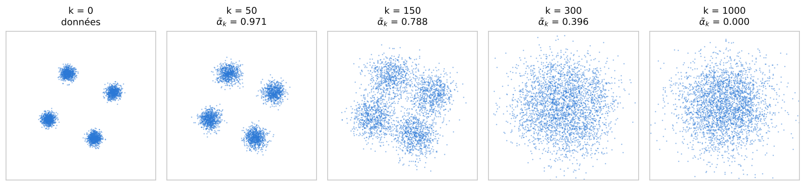
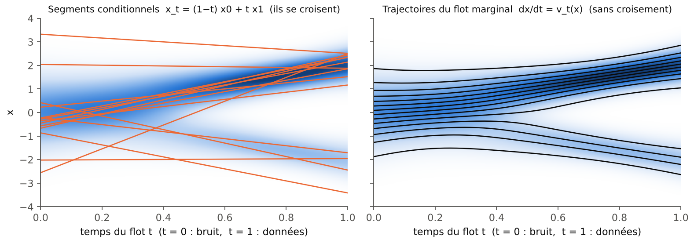
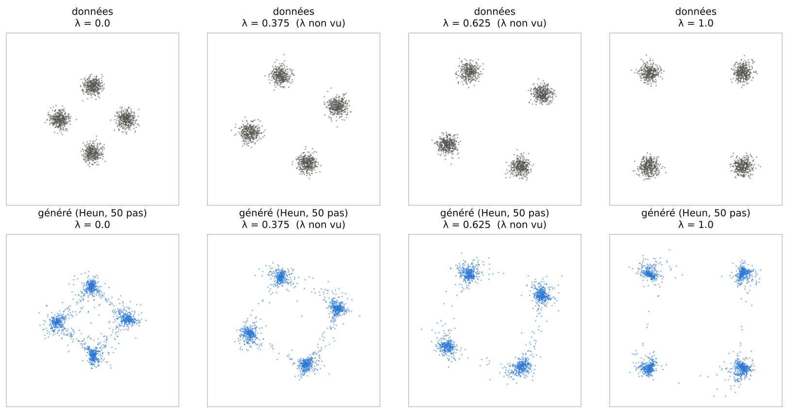

Generative models: diffusion and flow matching
Preparation · level M1 → M2 · ≈ 30 h
Objectives
This module is the methodological core of the curriculum: it builds, with full proofs, the two families of generative models that the MilaDy internship must compare, diffusion and flow matching. By the end of the thirty planned hours, you will be able to:
- explain what a generative model is as the transport of a simple law onto the data law, write the change-of-variables formula and compute the log-likelihood of a normalizing flow;
- derive the marginal law of the DDPM noising process, the posterior law of one step, the variational bound and the noise-prediction loss, then program ancestral sampling;
- pass to the continuous limit (forward and reverse stochastic differential equations, probability flow ordinary differential equation), prove Vincent’s equivalence between explicit and denoising score matching, as well as Tweedie’s formula;
- prove that the marginal velocity field generates the probability path (continuity equation) and that the conditional flow matching loss has the same gradient as the marginal loss; relate flow matching, rectified flow, stochastic interpolants and diffusion;
- condition a model on a physical parameter \boldsymbol\lambda (for example Re or Rm), program classifier-free guidance, explain guidance through the denoised estimate (DPS, universal guidance) and compute the Jensen gap it introduces;
- describe generation in a latent space and in a function space (latent diffusion, FunDiff, Functional Flow Matching) and say where to place a constraint such as \nabla\cdot\mathbf{B} = 0 in them;
- evaluate a generative model without likelihood, through distances between samples (energy distance, sliced Wasserstein) and physical metrics, always comparing with the statistical floor.
Prerequisites
The entry level is that of a first-year master’s student (M1) who has followed the previous modules of the curriculum. You should be comfortable with multivariate Gaussian laws (mean, covariance, conditioning of a Gaussian vector), conditional expectation and its orthogonal projection property in L^2, the Kullback–Leibler divergence, and the basics of stochastic calculus (Brownian motion, Fokker–Planck equation). These notions are covered in the module Probability, statistics and optimal transport; the Fokker–Planck equation and the generator of a noisy dynamics also appear in Dynamical systems, bifurcations and invariant measures.
On the learning side, you should be able to write a training loop in PyTorch (multilayer perceptron, Adam optimizer, backpropagation), which is covered by the module Deep learning for physics. The divergence of a field and the Leray projection, used in Chapter 6, come from the module Vector calculus and Fourier analysis.
This module directly prepares the last one of the curriculum, Generative models under physical constraints, which takes up the tools built here to impose zero divergence, energy balances and boundary conditions.
Conventions of this module The site follows the flow matching convention (see the common notation): the noise is \mathbf{x}_0 \sim \mathcal{N}(0, I), the data are \mathbf{x}_1 \sim \mu and the flow time t runs from 0 (noise) to 1 (data). The diffusion literature uses the opposite convention, where \mathbf{x}_0 denotes the data. To avoid any confusion, Chapters 2 and 3 write \mathbf{y}_k (discrete time) or \mathbf{y}_s (continuous time s \in [0, 1]) for the noisy state of the diffusion, with \mathbf{y}_0 = data; one goes from one convention to the other through t = 1 - s. Norms are Euclidean, \|\cdot\|, and all losses are written without a factor \tfrac12.
Work plan
The level indicates the difficulty: 1 for the foundations, 2 for the core of the module, 3 for what already touches the research questions of the internship. It never goes down from one session to the next.
| Session | Duration | Level | Content | Exercises |
|---|---|---|---|---|
| 1 | 3 h | 1 | Chapter 1: transport of a law, likelihood and its limits, normalizing flows, continuous flows | 1, 2 |
| 2 | 4 h | 2 | Chapter 2: forward process, posterior law, variational bound, noise prediction, DDPM sampling | 3, 4 |
| 3 | 5 h | 2 | Chapter 3: forward and reverse SDEs, probability flow ODE, score matching (Vincent, Tweedie), EDM | 5, 6, 7 |
| 4 | 4 h | 2 | Chapter 4, Sections 4.1 to 4.3: continuity equation, marginal field, gradient theorem, Gaussian example | 8, 9 |
| 5 | 3 h | 3 | Chapter 4, Sections 4.4 to 4.6: rectified flow, stochastic interpolants, velocity–score link | 10, 11 |
| 6 | 5 h | 3 | Chapter 5: conditioning on \boldsymbol\lambda, classifier-free guidance, DPS, Jensen gap, hands-on session | 12, 13, 14 |
| 7 | 3 h | 3 | Chapter 6: latent diffusion, noise in function space, FunDiff, Functional Flow Matching | 15 |
| 8 | 3 h | 3 | Chapter 7: evaluation, energy distance, sliced Wasserstein, physical metrics, comparison with DDPM | 16 |
| Total | 30 h | 7 chapters | 16 exercises |
Each session ends with the indicated exercises, to be worked on before reading their solution. The code blocks are self-contained: each runs as is, in less than thirty seconds on a CPU, with NumPy, SciPy and PyTorch. The outputs copied as comments were obtained by running the blocks on a single compute core; your figures may differ slightly depending on the library versions.
1. What is a generative model?
The MilaDy internship seeks to produce, for a set of parameters \boldsymbol\lambda = (Re, Rm, \dots), magnetohydrodynamic (MHD) fields that have the same statistical law as those of a simulation, without rerunning the simulation. We have samples (snapshots), not a formula for their density. This chapter sets the framework: a generative model is a machine that produces samples of a learned law, and the most natural way to build it is to transport a simple law, Gaussian noise, onto the data law.
1.1 Transporting a simple law onto the data law
Definition 1.1 — Image law (pushforward) Let \rho be a probability law on \mathbb{R}^d and T : \mathbb{R}^d \to \mathbb{R}^D a measurable map. The image law of \rho under T, denoted T_\#\rho, is defined by T_\#\rho(A) = \rho\big(T^{-1}(A)\big) for every measurable set A. Equivalently, if \mathbf{z} \sim \rho then T(\mathbf{z}) \sim T_\#\rho, and for every bounded test function \varphi:
\mathbb{E}_{T_\#\rho}[\varphi] = \mathbb{E}_{\mathbf{z} \sim \rho}\big[\varphi(T(\mathbf{z}))\big].
Definition 1.2 — Generative model A generative model is a family of laws q_\theta on \mathbb{R}^D, indexed by parameters \theta (the weights of a network), from which samples can be drawn at low cost, and which is fitted so that q_\theta is close to the data law \mu. The model is conditional if it depends on a variable \boldsymbol\lambda, q_\theta(\cdot \mid \boldsymbol\lambda) \approx \mu_{\boldsymbol\lambda}. It is explicit if its density can also be evaluated, implicit otherwise. A transport model is written q_\theta = (T_\theta)_\#\rho_0 with \rho_0 = \mathcal{N}(0, I).
The question is never whether a transport exists: in dimension 1, it is given explicitly by the cumulative distribution function, and in any dimension Brenier’s theorem (module p5) guarantees the existence of an optimal transport as soon as the source has a density. The difficulty is to learn this transport from samples only, in high dimension.
Proposition 1.3 — Transport in dimension 1 Let \mu be a law on \mathbb{R} with cumulative distribution function F, generalized inverse F^{-1}(u) = \inf\{x : F(x) \ge u\}, and let \Phi be the cumulative distribution function of \mathcal{N}(0, 1). Then T = F^{-1} \circ \Phi transports \mathcal{N}(0, 1) onto \mu: if Z \sim \mathcal{N}(0, 1), then T(Z) \sim \mu.
Proof. The variable U = \Phi(Z) follows the uniform law on ]0, 1[, since \mathbb{P}(\Phi(Z) \le u) = \mathbb{P}(Z \le \Phi^{-1}(u)) = u. Since F is nondecreasing and right-continuous, we have the equivalence F^{-1}(u) \le x \iff u \le F(x). Hence \mathbb{P}(F^{-1}(U) \le x) = \mathbb{P}(U \le F(x)) = F(x): the variable F^{-1}(U) has cumulative distribution function F. ∎
Example 1.4 — Exponential law For the exponential law with parameter 1, F(x) = 1 - e^{-x} for x \ge 0, so T(z) = -\ln\big(1 - \Phi(z)\big). The point z = 0, the median of the Gaussian, is sent to T(0) = \ln 2 \approx 0.693, the median of the exponential law. The map T is increasing: it “stretches” the right tail of the Gaussian and “compresses” its left tail against 0.
1.2 Likelihood and its limits
When the model is explicit, the most classical criterion to fit it is the likelihood of the data.
Definition 1.5 — Maximum likelihood Given samples \mathbf{x}^{(1)}, \dots, \mathbf{x}^{(N)} of \mu and a density model q_\theta, the average log-likelihood is \ell(\theta) = \frac1N \sum_{i=1}^N \log q_\theta(\mathbf{x}^{(i)}). The maximum likelihood estimator maximizes \ell.
Proposition 1.6 — Likelihood and Kullback–Leibler divergence If \mu has a density (still denoted \mu) with finite entropy H(\mu) = -\mathbb{E}_\mu[\log \mu], then
\mathbb{E}_{\mathbf{x} \sim \mu}\big[\log q_\theta(\mathbf{x})\big] = -H(\mu) - \mathrm{KL}(\mu \,\|\, q_\theta).
Maximizing the average log-likelihood therefore amounts, as N \to \infty, to minimizing \mathrm{KL}(\mu \,\|\, q_\theta) \ge 0.
Proof. By definition, \mathrm{KL}(\mu \,\|\, q_\theta) = \mathbb{E}_\mu[\log \mu - \log q_\theta] = -H(\mu) - \mathbb{E}_\mu[\log q_\theta], which gives the identity. The term H(\mu) does not depend on \theta. The nonnegativity of the divergence follows from Jensen’s inequality applied to the concave function \log: -\mathrm{KL} = \mathbb{E}_\mu[\log(q_\theta/\mu)] \le \log \mathbb{E}_\mu[q_\theta/\mu] = \log 1 = 0. Finally, the law of large numbers gives \ell(\theta) \to \mathbb{E}_\mu[\log q_\theta]. ∎
Likelihood nevertheless has four limits, which explain why the models of this module are not, in practice, trained by maximizing it directly.
Remark 1.7 — Four limits of the likelihood (a) It requires a computable density. For a transport model, this requires T_\theta to be invertible and the determinant of its Jacobian to be computable, which generally costs O(D^3) operations.
It weighs errors asymmetrically. The divergence \mathrm{KL}(\mu \,\|\, q) heavily penalizes a model that puts an almost zero density where there are data, but hardly penalizes a model that puts mass where there are none: maximum likelihood “covers” all the modes, even if it means filling the space between them.
In high dimension, it says little about the quality of the samples. If q = 0.01\,p + 0.99\,r mixes an excellent model p with a model r that produces only noise, then \log q \ge \log p - \ln 100 at every point: the log-likelihood loses at most 4.6 nats, a negligible quantity compared with a log-likelihood proportional to the dimension D \sim 10^6, whereas 99% of the samples are unusable. Theis et al. (2016) show more generally that likelihood and sample quality are largely independent in high dimension.
It ignores physics. A good likelihood guarantees neither \nabla\cdot\mathbf{B} = 0, nor the right energy spectrum, nor the right energy balance. Chapter 7 comes back to evaluation.
1.3 Normalizing flows: the change of variables
Normalizing flows (Rezende & Mohamed, 2015; review by Papamakarios et al., 2021) are explicit transport models: one chooses T_\theta invertible, with an easily computed Jacobian, and the density follows from the change of variables.
Theorem 1.8 — Change of variables Let T : \mathbb{R}^D \to \mathbb{R}^D be a C^1-diffeomorphism and \mathbf{z} with density \rho_0. Then \mathbf{x} = T(\mathbf{z}) has density
q(\mathbf{x}) = \rho_0\big(T^{-1}(\mathbf{x})\big)\,\big|\det J_{T^{-1}}(\mathbf{x})\big|,
that is, writing \mathbf{z} = T^{-1}(\mathbf{x}) for the source point,
\log q(\mathbf{x}) = \log\rho_0(\mathbf{z}) - \log\big|\det J_T(\mathbf{z})\big|.
For a composition T = T_L \circ \dots \circ T_1, with \mathbf{z}_0 = \mathbf{z} and \mathbf{z}_l = T_l(\mathbf{z}_{l-1}), the log-determinants add up: \log q(\mathbf{x}) = \log\rho_0(\mathbf{z}) - \sum_{l=1}^L \log|\det J_{T_l}(\mathbf{z}_{l-1})|.
Proof. For every bounded function \varphi, \mathbb{E}[\varphi(T(\mathbf{z}))] = \int \varphi(T(\mathbf{z}))\,\rho_0(\mathbf{z})\,\mathrm{d}\mathbf{z}. The change of variables \mathbf{x} = T(\mathbf{z}), legitimate for a diffeomorphism, gives \mathrm{d}\mathbf{z} = |\det J_{T^{-1}}(\mathbf{x})|\,\mathrm{d}\mathbf{x}, hence \mathbb{E}[\varphi(\mathbf{x})] = \int \varphi(\mathbf{x})\,\rho_0(T^{-1}(\mathbf{x}))\,|\det J_{T^{-1}}(\mathbf{x})|\,\mathrm{d}\mathbf{x}. This identity, true for every \varphi, identifies the density of \mathbf{x}. The second form comes from J_{T^{-1}}(\mathbf{x}) = J_T(\mathbf{z})^{-1}, and the formula for a composition from the multiplicativity of the determinant (chain rule). ∎
Example 1.9 — Affine flow For T(\mathbf{z}) = A\mathbf{z} + \mathbf{b} with A invertible, the image law of \mathcal{N}(0, I) is \mathcal{N}(\mathbf{b}, AA^\top) and
\log q(\mathbf{x}) = -\tfrac{D}{2}\log(2\pi) - \tfrac12\big\|A^{-1}(\mathbf{x} - \mathbf{b})\big\|^2 - \log|\det A|.
Maximum likelihood then gives \mathbf{b} = empirical mean and AA^\top = empirical covariance (Exercise 2): an affine flow can only represent Gaussian laws. Nonlinear transformations with a controlled determinant are needed.
Definition 1.10 — Affine coupling layer (Real NVP) Split \mathbf{z} = (\mathbf{z}_a, \mathbf{z}_b) into two blocks. The affine coupling layer of Dinh et al. (2017) is
T(\mathbf{z})_a = \mathbf{z}_a, \qquad T(\mathbf{z})_b = \mathbf{z}_b \odot \exp\big(\mathbf{s}(\mathbf{z}_a)\big) + \mathbf{m}(\mathbf{z}_a),
where \mathbf{s} and \mathbf{m} are two arbitrary networks and \odot is the componentwise product.
Proposition 1.11 — Inverse and determinant of a coupling layer The coupling layer is invertible, with inverse \mathbf{z}_a = \mathbf{x}_a, \mathbf{z}_b = (\mathbf{x}_b - \mathbf{m}(\mathbf{x}_a)) \odot \exp(-\mathbf{s}(\mathbf{x}_a)), and \log|\det J_T(\mathbf{z})| = \sum_i s_i(\mathbf{z}_a).
Proof. The inverse can be read off directly, since \mathbf{x}_a = \mathbf{z}_a is known. The Jacobian is block triangular: the block \partial T_a/\partial \mathbf{z}_a equals I, the block \partial T_a/\partial \mathbf{z}_b is zero, and the block \partial T_b/\partial \mathbf{z}_b is the diagonal matrix \mathrm{diag}(\exp \mathbf{s}(\mathbf{z}_a)). The determinant of a block triangular matrix is the product of the determinants of the diagonal blocks, namely \prod_i e^{s_i}. The block \partial T_b/\partial \mathbf{z}_a, which contains the derivatives of the networks, plays no role. ∎
By alternating the blocks from one layer to the next, one obtains a highly nonlinear transport whose likelihood is computed exactly, in O(D) operations per layer. The price to pay is a constrained architecture: each layer must remain invertible and “triangular”.
1.4 Continuous flows and Liouville’s formula
Another way to guarantee invertibility is to define T as the flow of an ordinary differential equation (ODE): this is the idea of continuous flows (Chen et al., 2018), which leads directly to the flow matching of Chapter 4.
Proposition 1.12 — Variation of the log-density along a flow Let v(\mathbf{x}, t) be a smooth velocity field, \mathbf{x}_t a solution of \dot{\mathbf{x}}_t = v(\mathbf{x}_t, t) with \mathbf{x}_0 \sim p_0, and p_t the density of \mathbf{x}_t. Then
\frac{\mathrm{d}}{\mathrm{d}t}\log p_t(\mathbf{x}_t) = -(\nabla\cdot v)(\mathbf{x}_t, t),
and therefore, integrating along the trajectory,
\log p_1(\mathbf{x}_1) = \log p_0(\mathbf{x}_0) - \int_0^1 (\nabla\cdot v)(\mathbf{x}_t, t)\,\mathrm{d}t.
Proof. Sketch. The transported density satisfies the continuity equation \partial_t p_t + \nabla\cdot(p_t v) = 0 (Theorem 4.2). Along a trajectory, the chain rule gives \frac{\mathrm{d}}{\mathrm{d}t}p_t(\mathbf{x}_t) = \partial_t p_t + v\cdot\nabla p_t = -\nabla\cdot(p_t v) + v\cdot\nabla p_t = -p_t\,\nabla\cdot v. Divide by p_t > 0 and integrate from 0 to 1. ∎
This formula makes the likelihood computable for any field v, without architectural constraints. But training by maximum likelihood requires, at each optimization step, integrating the ODE and the divergence of v (a trace of a Jacobian) and then backpropagating through the solver: this is very costly. The whole trick of diffusion and flow matching is to learn such a transport without simulating the ODE during training, through a simple regression.
Example 1.13 — Numerical check of the change of variables The following block pushes \mathcal{N}(0, 1) forward by T(z) = z + 4\tanh z, a strictly increasing map. The image density, computed by Theorem 1.8, has two bumps; we compare it with a histogram of 10^6 samples, then check that the average log-likelihood computed on the data side coincides with \mathbb{E}[\log\rho_0(Z) - \log T'(Z)] computed on the source side.
import numpy as np
from scipy.stats import norm
# Transport T(z) = z + a tanh(z), strictly increasing as soon as a > -1
a = 4.0
T = lambda z: z + a * np.tanh(z)
dT = lambda z: 1 + a / np.cosh(z) ** 2
def T_inv(x, iters=60): # inversion by Newton's method
z = np.array(x, dtype=float)
for _ in range(iters):
z -= (T(z) - x) / dT(z)
return z
def q(x): # pushforward density: q(x) = ρ0(T⁻¹(x)) / T'(T⁻¹(x))
z = T_inv(x)
return norm.pdf(z) / dT(z)
rng = np.random.default_rng(0)
x = T(rng.standard_normal(1_000_000)) # 10⁶ samples of q = T#ρ0
hist, bords = np.histogram(x, bins=120, range=(-9, 9), density=True)
centres = 0.5 * (bords[1:] + bords[:-1])
print("max gap histogram / formula :", round(np.abs(hist - q(centres)).max(), 4))
grille = np.linspace(-15, 15, 30001)
print("integral of q :", round(np.trapezoid(q(grille), grille), 6))
print("q(0) =", round(q(0.0), 4), " ; q(3.92) =", round(q(3.92), 4), " : two bumps")
print("mean log-likelihood :", round(np.mean(np.log(q(x[:100_000]))), 4))
z = rng.standard_normal(1_000_000) # same quantity computed on the source side:
print("E[log ρ0(Z) - log T'(Z)] :", round(np.mean(norm.logpdf(z) - np.log(dT(z))), 4))
# output:
# max gap histogram / formula : 0.002
# integral of q : 1.0
# q(0) = 0.0798 ; q(3.92) = 0.0904 : two bumps
# mean log-likelihood : -2.5657
# E[log ρ0(Z) - log T'(Z)] : -2.5648The histogram and the formula agree to within 2 \times 10^{-3}, which is the order of magnitude of the statistical error of a 120-bin histogram. The two estimates of the log-likelihood differ by 10^{-3}, again a sampling fluctuation. A smooth monotone map is therefore enough to turn a Gaussian into a bimodal law; in high dimension, the whole problem is to find such a map from the data alone.
Key takeaways — chapter 1
- A transport generative model is written q_\theta = (T_\theta)_\#\mathcal{N}(0, I); a transport always exists (cumulative distribution function in dimension 1, Brenier’s theorem in general), the difficulty is to learn it.
- Maximizing the likelihood amounts to minimizing \mathrm{KL}(\mu\,\|\,q_\theta); this criterion requires a computable density, covers the modes and says little about sample quality in high dimension.
- Change of variables: \log q(\mathbf{x}) = \log\rho_0(\mathbf{z}) - \log|\det J_T(\mathbf{z})|; coupling layers make this determinant easy.
- For a continuous flow, \frac{\mathrm{d}}{\mathrm{d}t}\log p_t(\mathbf{x}_t) = -\nabla\cdot v; training it by likelihood requires simulating the ODE, which diffusion and flow matching avoid.
2. Diffusion models: DDPM
Learning in one go a transport from noise to turbulent fields is difficult. Diffusion models, introduced by Sohl-Dickstein et al. (2015) and made effective by Ho, Jain and Abbeel (2020) under the name DDPM (Denoising Diffusion Probabilistic Models), split the problem: the data are progressively destroyed by adding noise, a trivial operation, and one then learns to invert each small noising step, which amounts to learning a denoiser. This chapter follows the diffusion convention: \mathbf{y}_0 is a data point, \mathbf{y}_K is almost pure noise.
2.1 The forward process
Definition 2.1 — Gaussian noising process Let \beta_1, \dots, \beta_K \in\, ]0, 1[ be numbers, generally increasing (the noise schedule). The forward process is the Markov chain
q(\mathbf{y}_k \mid \mathbf{y}_{k-1}) = \mathcal{N}\big(\sqrt{1 - \beta_k}\,\mathbf{y}_{k-1},\; \beta_k I\big), \qquad k = 1, \dots, K, \qquad \mathbf{y}_0 \sim \mu.
We write \alpha_k = 1 - \beta_k, \bar\alpha_k = \prod_{j=1}^k \alpha_j and \mathrm{RSB}_k = \bar\alpha_k/(1 - \bar\alpha_k) for the signal-to-noise ratio (RSB, from the French rapport signal sur bruit).
The factor \sqrt{1 - \beta_k} is not arbitrary: it contracts the signal just enough for the total variance to remain bounded, so that the chain converges to \mathcal{N}(0, I) instead of blowing up.
Proposition 2.2 — Marginal law of the forward process For every k, q(\mathbf{y}_k \mid \mathbf{y}_0) = \mathcal{N}\big(\sqrt{\bar\alpha_k}\,\mathbf{y}_0,\; (1 - \bar\alpha_k) I\big). In other words, \mathbf{y}_k can be drawn directly, without simulating the chain:
\mathbf{y}_k = \sqrt{\bar\alpha_k}\,\mathbf{y}_0 + \sqrt{1 - \bar\alpha_k}\,\boldsymbol\varepsilon, \qquad \boldsymbol\varepsilon \sim \mathcal{N}(0, I) \text{ independent of } \mathbf{y}_0.
Proof. By induction on k. The case k = 1 is the definition, since \bar\alpha_1 = \alpha_1. If the property holds at rank k - 1, we write \mathbf{y}_k = \sqrt{\alpha_k}\,\mathbf{y}_{k-1} + \sqrt{\beta_k}\,\boldsymbol\varepsilon_k = \sqrt{\alpha_k\bar\alpha_{k-1}}\,\mathbf{y}_0 + \sqrt{\alpha_k(1 - \bar\alpha_{k-1})}\,\boldsymbol\varepsilon' + \sqrt{\beta_k}\,\boldsymbol\varepsilon_k, with \boldsymbol\varepsilon' and \boldsymbol\varepsilon_k independent standard Gaussians. A sum of independent Gaussians is Gaussian, with variance \alpha_k(1 - \bar\alpha_{k-1}) + \beta_k = \alpha_k - \bar\alpha_k + 1 - \alpha_k = 1 - \bar\alpha_k. Since \alpha_k\bar\alpha_{k-1} = \bar\alpha_k, we obtain the result at rank k. ∎
If \bar\alpha_K \approx 0, the law of \mathbf{y}_K is almost \mathcal{N}(0, I) whatever the data law: this is the starting point of sampling.
Example 2.3 — Linear schedule of Ho et al. (2020) With K = 1000 and \beta_k increasing linearly from 10^{-4} to 0.02, the code block of Section 2.4 gives \bar\alpha_K = 4.0 \times 10^{-5}: the data point only weighs \sqrt{\bar\alpha_K} \approx 0.006 in \mathbf{y}_K. The signal-to-noise ratio crosses 1 around k = 250 (\mathrm{RSB}_{250} = 1.10) and is still 8.7 at k = 100: a large share of the steps serves to destroy the small scales, another to erase the large structures. Figure 2.4 shows the effect of noising on a mixture of four Gaussians in the plane.

2.2 The posterior law of one step
Inverting the forward process requires the law of \mathbf{y}_{k-1} given \mathbf{y}_k. It is inaccessible in general, since it depends on the data law. However, if \mathbf{y}_0 is also known, it is Gaussian and explicit.
Proposition 2.5 — Posterior law given the data For k \ge 2, q(\mathbf{y}_{k-1} \mid \mathbf{y}_k, \mathbf{y}_0) = \mathcal{N}\big(\tilde{\boldsymbol\mu}_k(\mathbf{y}_k, \mathbf{y}_0),\; \tilde\beta_k I\big) with
\tilde{\boldsymbol\mu}_k(\mathbf{y}_k, \mathbf{y}_0) = \frac{\sqrt{\bar\alpha_{k-1}}\,\beta_k}{1 - \bar\alpha_k}\,\mathbf{y}_0 + \frac{\sqrt{\alpha_k}\,(1 - \bar\alpha_{k-1})}{1 - \bar\alpha_k}\,\mathbf{y}_k
and a variance that depends only on the schedule:
\tilde\beta_k = \frac{1 - \bar\alpha_{k-1}}{1 - \bar\alpha_k}\,\beta_k.
Proof. By Bayes’ formula and the Markov property, q(\mathbf{y}_{k-1} \mid \mathbf{y}_k, \mathbf{y}_0) \propto q(\mathbf{y}_k \mid \mathbf{y}_{k-1})\,q(\mathbf{y}_{k-1} \mid \mathbf{y}_0). The logarithm of the right-hand side equals, up to a constant,
-\frac{\|\mathbf{y}_k - \sqrt{\alpha_k}\,\mathbf{y}_{k-1}\|^2}{2\beta_k} - \frac{\|\mathbf{y}_{k-1} - \sqrt{\bar\alpha_{k-1}}\,\mathbf{y}_0\|^2}{2(1 - \bar\alpha_{k-1})}.
This is a quadratic form in \mathbf{y}_{k-1}: the law is Gaussian. The coefficient of -\tfrac12\|\mathbf{y}_{k-1}\|^2, that is, the precision, equals \frac{\alpha_k}{\beta_k} + \frac{1}{1 - \bar\alpha_{k-1}} = \frac{\alpha_k(1 - \bar\alpha_{k-1}) + \beta_k}{\beta_k(1 - \bar\alpha_{k-1})} = \frac{1 - \bar\alpha_k}{\beta_k(1 - \bar\alpha_{k-1})} = \frac{1}{\tilde\beta_k}. The coefficient of the term linear in \mathbf{y}_{k-1} is \frac{\sqrt{\alpha_k}}{\beta_k}\mathbf{y}_k + \frac{\sqrt{\bar\alpha_{k-1}}}{1 - \bar\alpha_{k-1}}\mathbf{y}_0; the mean is this vector multiplied by the variance \tilde\beta_k, which gives exactly \tilde{\boldsymbol\mu}_k. ∎
2.3 The reverse model and the variational bound
Definition 2.6 — Reverse model The DDPM generative model is a Markov chain that runs backward in time: p(\mathbf{y}_K) = \mathcal{N}(0, I) and, for k = K, \dots, 1,
p_\theta(\mathbf{y}_{k-1} \mid \mathbf{y}_k) = \mathcal{N}\big(\mathbf{m}_\theta(\mathbf{y}_k, k),\; \sigma_k^2 I\big),
where \mathbf{m}_\theta is a network and \sigma_k^2 a fixed variance (for example \beta_k or \tilde\beta_k). The density of the model is p_\theta(\mathbf{y}_0) = \int p(\mathbf{y}_K)\prod_{k=1}^K p_\theta(\mathbf{y}_{k-1} \mid \mathbf{y}_k)\,\mathrm{d}\mathbf{y}_{1:K}.
This density is an integral in dimension KD: it cannot be computed. One maximizes a lower bound of it instead.
Theorem 2.7 — Variational bound For every data point \mathbf{y}_0,
-\log p_\theta(\mathbf{y}_0) \le L_K + \sum_{k=2}^K L_{k-1} + L_0,
with L_K = \mathrm{KL}\big(q(\mathbf{y}_K \mid \mathbf{y}_0)\,\|\,p(\mathbf{y}_K)\big), which does not depend on \theta, L_0 = -\mathbb{E}_q\big[\log p_\theta(\mathbf{y}_0 \mid \mathbf{y}_1)\big] and, for 2 \le k \le K,
L_{k-1} = \mathbb{E}_{q(\mathbf{y}_k \mid \mathbf{y}_0)}\Big[\mathrm{KL}\big(q(\mathbf{y}_{k-1} \mid \mathbf{y}_k, \mathbf{y}_0)\,\big\|\,p_\theta(\mathbf{y}_{k-1} \mid \mathbf{y}_k)\big)\Big].
Proof. We introduce the law of the forward process as an importance law: \log p_\theta(\mathbf{y}_0) = \log \mathbb{E}_{q(\mathbf{y}_{1:K} \mid \mathbf{y}_0)}\big[p_\theta(\mathbf{y}_{0:K})/q(\mathbf{y}_{1:K} \mid \mathbf{y}_0)\big], and Jensen’s inequality (the logarithm is concave) allows us to move the logarithm inside the expectation, which gives a lower bound.
It remains to rewrite the quotient. By the Markov property and then Bayes’ formula, q(\mathbf{y}_k \mid \mathbf{y}_{k-1}) = q(\mathbf{y}_k \mid \mathbf{y}_{k-1}, \mathbf{y}_0) = q(\mathbf{y}_{k-1} \mid \mathbf{y}_k, \mathbf{y}_0)\,q(\mathbf{y}_k \mid \mathbf{y}_0)/q(\mathbf{y}_{k-1} \mid \mathbf{y}_0). In the product over k = 2, \dots, K, the quotients q(\mathbf{y}_k \mid \mathbf{y}_0)/q(\mathbf{y}_{k-1} \mid \mathbf{y}_0) telescope into q(\mathbf{y}_K \mid \mathbf{y}_0)/q(\mathbf{y}_1 \mid \mathbf{y}_0), hence
q(\mathbf{y}_{1:K} \mid \mathbf{y}_0) = q(\mathbf{y}_K \mid \mathbf{y}_0)\prod_{k=2}^K q(\mathbf{y}_{k-1} \mid \mathbf{y}_k, \mathbf{y}_0).
Dividing p_\theta(\mathbf{y}_{0:K}) = p(\mathbf{y}_K)\prod_{k=1}^K p_\theta(\mathbf{y}_{k-1} \mid \mathbf{y}_k) by this expression and taking the opposite of the expectation of the logarithm, we obtain term by term L_K, the sum of the L_{k-1} (each term is the expectation of the logarithm of a quotient of densities, that is, a Kullback–Leibler divergence) and L_0. ∎
Each term L_{k-1} compares two Gaussians. When the variances are fixed, the divergence between \mathcal{N}(\mathbf{a}, \tilde\beta I) and \mathcal{N}(\mathbf{b}, \sigma^2 I) equals \|\mathbf{a} - \mathbf{b}\|^2/(2\sigma^2) plus a constant that depends only on the variances. It is therefore enough for \mathbf{m}_\theta to learn the posterior mean \tilde{\boldsymbol\mu}_k. The right choice of parameterization is to predict the noise.
Proposition 2.8 — Noise prediction Writing \mathbf{y}_k = \sqrt{\bar\alpha_k}\,\mathbf{y}_0 + \sqrt{1 - \bar\alpha_k}\,\boldsymbol\varepsilon, the posterior mean can be expressed without \mathbf{y}_0:
\tilde{\boldsymbol\mu}_k = \frac{1}{\sqrt{\alpha_k}}\Big(\mathbf{y}_k - \frac{\beta_k}{\sqrt{1 - \bar\alpha_k}}\,\boldsymbol\varepsilon\Big).
With the parameterization \mathbf{m}_\theta(\mathbf{y}_k, k) = \frac{1}{\sqrt{\alpha_k}}\big(\mathbf{y}_k - \frac{\beta_k}{\sqrt{1 - \bar\alpha_k}}\,\boldsymbol\varepsilon_\theta(\mathbf{y}_k, k)\big), the term L_{k-1}, averaged over the data point \mathbf{y}_0 \sim \mu, becomes, up to a constant,
L_{k-1} = \frac{\beta_k^2}{2\sigma_k^2\,\alpha_k(1 - \bar\alpha_k)}\;\mathbb{E}_{\mathbf{y}_0, \boldsymbol\varepsilon}\Big\|\boldsymbol\varepsilon - \boldsymbol\varepsilon_\theta\big(\sqrt{\bar\alpha_k}\,\mathbf{y}_0 + \sqrt{1 - \bar\alpha_k}\,\boldsymbol\varepsilon,\; k\big)\Big\|^2.
Proof. Substitute \mathbf{y}_0 = (\mathbf{y}_k - \sqrt{1 - \bar\alpha_k}\,\boldsymbol\varepsilon)/\sqrt{\bar\alpha_k} into \tilde{\boldsymbol\mu}_k (Proposition 2.5). Since \sqrt{\bar\alpha_{k-1}}/\sqrt{\bar\alpha_k} = 1/\sqrt{\alpha_k}, the coefficient of \mathbf{y}_k equals \frac{\beta_k + \alpha_k(1 - \bar\alpha_{k-1})}{(1 - \bar\alpha_k)\sqrt{\alpha_k}} = \frac{1}{\sqrt{\alpha_k}}, and that of \boldsymbol\varepsilon equals -\frac{\beta_k\sqrt{1 - \bar\alpha_k}}{(1 - \bar\alpha_k)\sqrt{\alpha_k}} = -\frac{\beta_k}{\sqrt{\alpha_k}\sqrt{1 - \bar\alpha_k}}. With the proposed parameterization, \tilde{\boldsymbol\mu}_k - \mathbf{m}_\theta = \frac{\beta_k}{\sqrt{\alpha_k(1 - \bar\alpha_k)}}(\boldsymbol\varepsilon_\theta - \boldsymbol\varepsilon), and the square of its norm is divided by 2\sigma_k^2. ∎
Definition 2.9 — Simplified DDPM loss Ho et al. (2020) drop the weights of Proposition 2.8 and train with
L_{\mathrm{simple}}(\theta) = \mathbb{E}_{k \sim \mathcal{U}\{1, \dots, K\},\; \mathbf{y}_0 \sim \mu,\; \boldsymbol\varepsilon \sim \mathcal{N}(0, I)}\Big\|\boldsymbol\varepsilon - \boldsymbol\varepsilon_\theta\big(\sqrt{\bar\alpha_k}\,\mathbf{y}_0 + \sqrt{1 - \bar\alpha_k}\,\boldsymbol\varepsilon,\; k\big)\Big\|^2.
Training is a simple regression: draw a data point, a time step and a noise, build \mathbf{y}_k in one line, and the network learns to recover the noise. No simulation of the chain is needed. With this loss, Ho et al. (2020) obtain an FID of 3.17 and an Inception score of 9.46 on unconditional CIFAR-10.
2.4 Sampling
Algorithm 2.10 — DDPM ancestral sampling Draw \mathbf{y}_K \sim \mathcal{N}(0, I). For k = K, \dots, 1: draw \mathbf{z} \sim \mathcal{N}(0, I) if k > 1, otherwise \mathbf{z} = 0, then set
\mathbf{y}_{k-1} = \frac{1}{\sqrt{\alpha_k}}\Big(\mathbf{y}_k - \frac{\beta_k}{\sqrt{1 - \bar\alpha_k}}\,\boldsymbol\varepsilon_\theta(\mathbf{y}_k, k)\Big) + \sigma_k\,\mathbf{z}.
Return \mathbf{y}_0.
Sampling costs K evaluations of the network, that is, 1000 in the original paper. Song, Meng and Ermon (2021) showed that with the same network, a deterministic sampler (DDIM) obtains samples of comparable quality in far fewer steps: at each step, one computes the denoised estimate \hat{\mathbf{y}}_0 = (\mathbf{y}_k - \sqrt{1 - \bar\alpha_k}\,\boldsymbol\varepsilon_\theta)/\sqrt{\bar\alpha_k} and then “re-noises” it to the next level k' with the predicted noise, \mathbf{y}_{k'} = \sqrt{\bar\alpha_{k'}}\,\hat{\mathbf{y}}_0 + \sqrt{1 - \bar\alpha_{k'}}\,\boldsymbol\varepsilon_\theta. Chapter 3 shows that DDIM discretizes an ordinary differential equation.
Example 2.11 — Numerical check of Propositions 2.2 and 2.5 The following block computes the schedule of Ho et al., simulates the forward chain on two-point data \pm 1, then checks that the reconstructed noise \boldsymbol\varepsilon = (\mathbf{y}_k - \sqrt{\bar\alpha_k}\,\mathbf{y}_0)/\sqrt{1 - \bar\alpha_k} is standard Gaussian and independent of the data, and that the residual \mathbf{y}_{k-1} - \tilde{\boldsymbol\mu}_k indeed has variance \tilde\beta_k (and not \beta_k).
import numpy as np
K = 1000
beta = np.linspace(1e-4, 0.02, K) # linear schedule of Ho et al. (2020)
alpha = 1 - beta
abar = np.cumprod(alpha) # ᾱ_k = ∏_{j ≤ k} (1 - β_j) (Python index k-1)
snr = abar / (1 - abar) # signal-to-noise ratio
print(f"ᾱ_K = {abar[-1]:.2e}")
for k in [1, 10, 100, 250, 500, 1000]:
print(f"k = {k:4d} : ᾱ_k = {abar[k-1]:.4f}, RSB = {snr[k-1]:.3e}")
rng = np.random.default_rng(0)
n = 400_000
y0 = rng.choice([-1.0, 1.0], size=n) # two-point data ±1
def chaine(k):
"""Simulates the forward chain; returns (y_{k-1}, y_k)."""
y = y0.copy()
for j in range(k - 1):
y = np.sqrt(alpha[j]) * y + np.sqrt(beta[j]) * rng.standard_normal(n)
return y, np.sqrt(alpha[k-1]) * y + np.sqrt(beta[k-1]) * rng.standard_normal(n)
# Marginal law (Prop. 2.2): ε = (y_k - √ᾱ_k y0)/√(1-ᾱ_k) must be N(0,1) and independent of y0
_, yk = chaine(300)
eps = (yk - np.sqrt(abar[299]) * y0) / np.sqrt(1 - abar[299])
print(f"k = 300, ε: mean {eps.mean():+.4f}, variance {eps.var():.4f}, corr(ε, y0) = {np.corrcoef(eps, y0)[0,1]:+.4f}")
# Posterior law q(y_{k-1} | y_k, y0) (Prop. 2.5), at k = 10 where β̃_k and β_k clearly differ
k = 10
yprec, yk = chaine(k)
c0 = np.sqrt(abar[k-2]) * beta[k-1] / (1 - abar[k-1])
ck = np.sqrt(alpha[k-1]) * (1 - abar[k-2]) / (1 - abar[k-1])
beta_t = (1 - abar[k-2]) / (1 - abar[k-1]) * beta[k-1]
r = yprec - (c0 * y0 + ck * yk)
print(f"k = 10, residual: mean {r.mean():+.1e}, variance {r.var():.4e} ; β̃_k = {beta_t:.4e}, β_k = {beta[k-1]:.4e}")
# output:
# ᾱ_K = 4.04e-05
# k = 1 : ᾱ_k = 0.9999, RSB = 9.999e+03
# k = 10 : ᾱ_k = 0.9981, RSB = 5.268e+02
# k = 100 : ᾱ_k = 0.8970, RSB = 8.710e+00
# k = 250 : ᾱ_k = 0.5241, RSB = 1.101e+00
# k = 500 : ᾱ_k = 0.0786, RSB = 8.529e-02
# k = 1000 : ᾱ_k = 0.0000, RSB = 4.036e-05
# k = 300, ε: mean +0.0025, variance 1.0025, corr(ε, y0) = -0.0021
# k = 10, residual: mean +1.0e-05, variance 2.3764e-04 ; β̃_k = 2.3818e-04, β_k = 2.7928e-04The measured variance of the residual, 2.376 \times 10^{-4}, is within 0.2% of \tilde\beta_{10} = 2.382 \times 10^{-4} and 15% away from \beta_{10}: it is indeed the posterior variance that governs the reverse step when the data point is known. The reconstructed noise is centered, of variance 1 and uncorrelated with \mathbf{y}_0, up to sampling fluctuations (\pm 0.003 for 4 \times 10^5 draws).
Key takeaways — chapter 2
- Gaussian noising has an explicit marginal law: \mathbf{y}_k = \sqrt{\bar\alpha_k}\,\mathbf{y}_0 + \sqrt{1 - \bar\alpha_k}\,\boldsymbol\varepsilon; \mathbf{y}_k is drawn in one line.
- Given the data point, a reverse step is Gaussian with mean \tilde{\boldsymbol\mu}_k and variance \tilde\beta_k; the variational bound reduces to learning this mean.
- Parameterizing the mean by the predicted noise \boldsymbol\varepsilon_\theta turns training into a regression: L_{\mathrm{simple}} = \mathbb{E}\|\boldsymbol\varepsilon - \boldsymbol\varepsilon_\theta(\mathbf{y}_k, k)\|^2.
- Ancestral sampling costs K evaluations of the network; DDIM reuses the same network with far fewer steps.
3. The continuous view: SDEs, score and probability flow
When the number of steps K tends to infinity, the DDPM chain becomes a stochastic differential equation (SDE). This passage to the limit, systematized by Song et al. (2021), has three benefits: it shows that the whole of diffusion rests on a single object, the score \nabla\log p_s; it provides an ordinary differential equation with the same marginal laws, hence a deterministic sampler; it cleanly separates the modeling choices (schedule, parameterization, solver), which EDM exploits (Karras et al., 2022).
3.1 From the chain to the stochastic differential equation
Let s_k = k/K and \beta_k = \beta(s_k)/K for a continuous function \beta(s) > 0. Since \sqrt{1 - \beta_k} \approx 1 - \beta_k/2, one step of the chain reads \mathbf{y}_k - \mathbf{y}_{k-1} \approx -\tfrac12\beta(s_k)\,\mathbf{y}_{k-1}\,\Delta s + \sqrt{\beta(s_k)\,\Delta s}\;\boldsymbol\varepsilon_k with \Delta s = 1/K: this is one step of the Euler–Maruyama scheme of an SDE.
Definition 3.1 — Forward SDE The continuous noising process is the solution of
\mathrm{d}\mathbf{y}_s = f(\mathbf{y}_s, s)\,\mathrm{d}s + g(s)\,\mathrm{d}W_s, \qquad s \in [0, 1], \qquad \mathbf{y}_0 \sim \mu,
where W is a Brownian motion in \mathbb{R}^D. We write p_s for the density of \mathbf{y}_s. Two classical choices (Song et al., 2021): the variance-preserving (VP) SDE, the limit of DDPM, with f = -\tfrac12\beta(s)\mathbf{y} and g = \sqrt{\beta(s)}; the variance-exploding (VE) SDE, with f = 0 and g = \sqrt{\mathrm{d}[\sigma^2(s)]/\mathrm{d}s}, which simply adds a noise of variance \sigma^2(s).
Proposition 3.2 — Marginal laws of the VP SDE For the VP SDE, \mathbf{y}_s \mid \mathbf{y}_0 \sim \mathcal{N}\big(a(s)\,\mathbf{y}_0,\; \sigma(s)^2 I\big) with a(s) = \exp\big(-\tfrac12\int_0^s\beta(r)\,\mathrm{d}r\big) and \sigma(s)^2 = 1 - a(s)^2.
Proof. Let B(s) = \int_0^s \beta. Itô’s formula applied to e^{B(s)/2}\,\mathbf{y}_s (a linear function of \mathbf{y}, hence with no second-derivative term) gives \mathrm{d}\big(e^{B/2}\mathbf{y}_s\big) = e^{B/2}\big(\tfrac12\beta\,\mathbf{y}_s\,\mathrm{d}s + \mathrm{d}\mathbf{y}_s\big) = e^{B/2}\sqrt{\beta}\,\mathrm{d}W_s. Integrating, \mathbf{y}_s = e^{-B(s)/2}\mathbf{y}_0 + \int_0^s e^{-(B(s) - B(r))/2}\sqrt{\beta(r)}\,\mathrm{d}W_r. The stochastic integral of a deterministic function is a centered Gaussian; by the Itô isometry, its variance equals \int_0^s e^{-(B(s) - B(r))}\beta(r)\,\mathrm{d}r = \big[e^{-(B(s) - B(r))}\big]_{r=0}^{r=s} = 1 - e^{-B(s)}. ∎
The density p_s obeys the Fokker–Planck equation (module p4):
\partial_s p_s = -\nabla\cdot(f\,p_s) + \frac{g^2}{2}\,\Delta p_s.
Everything that follows rests on an elementary identity: \Delta p = \nabla\cdot(\nabla p) = \nabla\cdot(p\,\nabla\log p).
3.2 Going back in time: reverse SDE and probability flow ODE
Theorem 3.3 — Reverse SDE (Anderson, 1982; Song et al., 2021) Let \tau = 1 - s denote reversed time. The process \bar{\mathbf{y}}_\tau solution of
\mathrm{d}\bar{\mathbf{y}}_\tau = \Big[-f(\bar{\mathbf{y}}_\tau, 1 - \tau) + g(1 - \tau)^2\,\nabla\log p_{1-\tau}(\bar{\mathbf{y}}_\tau)\Big]\mathrm{d}\tau + g(1 - \tau)\,\mathrm{d}\bar W_\tau, \qquad \bar{\mathbf{y}}_0 \sim p_1,
has at time \tau the law p_{1-\tau} of the forward process at time s = 1 - \tau. In particular \bar{\mathbf{y}}_1 \sim \mu.
Proof. Sketch, at the level of marginal laws (Anderson proves the equality of the laws of entire trajectories). Let q_\tau = p_{1-\tau}. By Fokker–Planck, \partial_\tau q_\tau = -(\partial_s p)_{s = 1 - \tau} = \nabla\cdot(f\,q_\tau) - \frac{g^2}{2}\Delta q_\tau. We look for a drift b such that this equation is the Fokker–Planck equation of an SDE with diffusion coefficient g, that is, \partial_\tau q = -\nabla\cdot(b\,q) + \frac{g^2}{2}\Delta q. We need -\nabla\cdot(b\,q) = \nabla\cdot(f\,q) - g^2\Delta q = \nabla\cdot\big(f\,q - g^2 q\,\nabla\log q\big), which is achieved by b = -f + g^2\,\nabla\log q. The two Fokker–Planck equations coincide and start from the same law q_0 = p_1; by uniqueness of the solution (taken for granted), the marginal laws coincide at all times. ∎
Proposition 3.4 — Probability flow ODE The ordinary differential equation
\frac{\mathrm{d}\mathbf{y}}{\mathrm{d}s} = f(\mathbf{y}, s) - \frac12\,g(s)^2\,\nabla\log p_s(\mathbf{y})
transports p_0 = \mu onto p_s for every s. Integrated backward from \mathbf{y}_1 \sim p_1 \approx \mathcal{N}(0, I), it produces samples of \mu deterministically.
Proof. With the identity \Delta p = \nabla\cdot(p\nabla\log p), the Fokker–Planck equation becomes \partial_s p_s = -\nabla\cdot\big[\big(f - \tfrac12 g^2\nabla\log p_s\big)\,p_s\big]. This is the continuity equation (Theorem 4.2) of the velocity field f - \tfrac12 g^2\nabla\log p_s: the density p_s is transported by the flow of this field. ∎
The reverse SDE and the probability flow ODE have the same marginal laws, but not the same trajectories: the SDE adds noise that can correct some errors, while the ODE is deterministic, bijective, allows the likelihood to be computed through Proposition 1.12 and lends itself to high-order solvers. In both cases, it is enough to know the score \nabla\log p_s at all noise levels.
3.3 The score and how to learn it
Definition 3.5 — Score and explicit score matching The score of a density p is the vector field \nabla\log p. It does not depend on the normalizing constant of p. Explicit score matching looks for a network s_\theta that minimizes
J_{\mathrm{ESM}}(\theta) = \mathbb{E}_{\mathbf{y} \sim p}\big\|s_\theta(\mathbf{y}) - \nabla\log p(\mathbf{y})\big\|^2.
This loss is unusable as is, since \nabla\log p is precisely unknown. Hyvärinen (2005) showed that an integration by parts rewrites it, up to a constant, as \mathbb{E}_p\big[2\,\mathrm{tr}\,\nabla s_\theta + \|s_\theta\|^2\big] (Exercise 7), but the trace of the Jacobian costs D backpropagations. The solution adopted by all diffusion models is due to Vincent (2011): noise the data and learn to denoise.
Theorem 3.6 — Vincent’s equivalence (2011) Let q_\sigma(\mathbf{y} \mid \mathbf{y}_0) be a smooth noising density and p_\sigma(\mathbf{y}) = \int q_\sigma(\mathbf{y} \mid \mathbf{y}_0)\,\mu(\mathrm{d}\mathbf{y}_0) the law of the noisy data. Define the denoising score matching loss
J_{\mathrm{DSM}}(\theta) = \mathbb{E}_{\mathbf{y}_0 \sim \mu,\; \mathbf{y} \sim q_\sigma(\cdot \mid \mathbf{y}_0)}\big\|s_\theta(\mathbf{y}) - \nabla_{\mathbf{y}}\log q_\sigma(\mathbf{y} \mid \mathbf{y}_0)\big\|^2.
Then J_{\mathrm{DSM}}(\theta) = J_{\mathrm{ESM}}(\theta) + C, where J_{\mathrm{ESM}} is computed for p = p_\sigma and C does not depend on \theta. The two losses therefore have the same minimizers and the same gradients.
Proof. Expand both squares. In J_{\mathrm{ESM}}: \mathbb{E}_{p_\sigma}\|s_\theta\|^2 - 2\,\mathbb{E}_{p_\sigma}[s_\theta\cdot\nabla\log p_\sigma] + C_1. In J_{\mathrm{DSM}}: \mathbb{E}\|s_\theta(\mathbf{y})\|^2 - 2\,\mathbb{E}[s_\theta(\mathbf{y})\cdot\nabla_{\mathbf{y}}\log q_\sigma(\mathbf{y} \mid \mathbf{y}_0)] + C_2. The constants C_1 = \mathbb{E}\|\nabla\log p_\sigma\|^2 and C_2 = \mathbb{E}\|\nabla\log q_\sigma\|^2 do not depend on \theta. The first terms are equal, since the marginal law of \mathbf{y} is p_\sigma. For the cross terms, differentiating under the integral:
\mathbb{E}_{p_\sigma}[s_\theta\cdot\nabla\log p_\sigma] = \int s_\theta(\mathbf{y})\cdot\nabla p_\sigma(\mathbf{y})\,\mathrm{d}\mathbf{y} = \iint s_\theta(\mathbf{y})\cdot\nabla_{\mathbf{y}} q_\sigma(\mathbf{y} \mid \mathbf{y}_0)\,\mu(\mathrm{d}\mathbf{y}_0)\,\mathrm{d}\mathbf{y}.
Write \nabla_{\mathbf{y}} q_\sigma = q_\sigma\,\nabla_{\mathbf{y}}\log q_\sigma: the last integral is exactly \mathbb{E}[s_\theta(\mathbf{y})\cdot\nabla_{\mathbf{y}}\log q_\sigma(\mathbf{y} \mid \mathbf{y}_0)] under the joint law of (\mathbf{y}_0, \mathbf{y}). The cross terms are equal, hence J_{\mathrm{DSM}} - J_{\mathrm{ESM}} = C_2 - C_1. ∎
Key point — denoising is learning the score For a Gaussian noising \mathbf{y} = a\,\mathbf{y}_0 + \sigma\boldsymbol\varepsilon, we have \nabla_{\mathbf{y}}\log q_\sigma(\mathbf{y} \mid \mathbf{y}_0) = -(\mathbf{y} - a\mathbf{y}_0)/\sigma^2 = -\boldsymbol\varepsilon/\sigma, hence
J_{\mathrm{DSM}}(\theta) = \frac{1}{\sigma^2}\,\mathbb{E}\big\|\boldsymbol\varepsilon - \boldsymbol\varepsilon_\theta(\mathbf{y})\big\|^2,
where we have set \boldsymbol\varepsilon_\theta = -\sigma\,s_\theta. The DDPM loss (Definition 2.9) is a denoising score matching loss, weighted by \sigma^2 at each noise level, and the learned score is s_\theta(\mathbf{y}_k, k) = -\boldsymbol\varepsilon_\theta(\mathbf{y}_k, k)/\sqrt{1 - \bar\alpha_k}. This is the link between DDPM and the score-based models of Song & Ermon (2019).
The next proposition says what the score represents: the direction toward the best estimate of the clean data point.
Proposition 3.7 — Tweedie’s formula (Efron, 2011) If \mathbf{y} = a\,\mathbf{y}_0 + \sigma\boldsymbol\varepsilon with \boldsymbol\varepsilon \sim \mathcal{N}(0, I) independent of \mathbf{y}_0 \sim \mu, and if p is the density of \mathbf{y}, then
\mathbb{E}[\mathbf{y}_0 \mid \mathbf{y}] = \frac{\mathbf{y} + \sigma^2\,\nabla\log p(\mathbf{y})}{a},
which can also be written, for the noise,
\mathbb{E}[\boldsymbol\varepsilon \mid \mathbf{y}] = -\sigma\,\nabla\log p(\mathbf{y}).
Proof. We have p(\mathbf{y}) = \int \mathcal{N}(\mathbf{y};\, a\mathbf{y}_0, \sigma^2 I)\,\mu(\mathrm{d}\mathbf{y}_0). Differentiating under the integral, \nabla\mathcal{N}(\mathbf{y};\, a\mathbf{y}_0, \sigma^2 I) = -\frac{\mathbf{y} - a\mathbf{y}_0}{\sigma^2}\,\mathcal{N}(\mathbf{y};\, a\mathbf{y}_0, \sigma^2 I), so \nabla p(\mathbf{y}) = -\frac{1}{\sigma^2}\big(\mathbf{y}\,p(\mathbf{y}) - a\,\mathbb{E}[\mathbf{y}_0 \mid \mathbf{y}]\,p(\mathbf{y})\big), since \int \mathbf{y}_0\,\mathcal{N}(\mathbf{y};\, a\mathbf{y}_0, \sigma^2 I)\,\mu(\mathrm{d}\mathbf{y}_0) = \mathbb{E}[\mathbf{y}_0 \mid \mathbf{y}]\,p(\mathbf{y}) (Bayes’ formula). Divide by p(\mathbf{y}) and isolate \mathbb{E}[\mathbf{y}_0 \mid \mathbf{y}]. The second form is obtained by taking the conditional expectation of \boldsymbol\varepsilon = (\mathbf{y} - a\mathbf{y}_0)/\sigma. ∎
The optimal denoiser, in the least-squares sense, is the conditional expectation \mathbb{E}[\mathbf{y}_0 \mid \mathbf{y}]; Tweedie’s formula says that it can be deduced from the score, and conversely. This denoised estimate will come back in Chapter 5 to guide sampling.
Example 3.8 — Numerical check of Vincent’s equivalence Take one-dimensional data \mu = \tfrac12\mathcal{N}(-2, 0.5^2) + \tfrac12\mathcal{N}(2, 0.5^2), noised by y = y_0 + \sigma\varepsilon with \sigma = 1, and a family of models s_\theta(y) = \theta_1 y + \theta_2\tanh y. The exact score of p_\sigma is known. For several \theta, we estimate J_{\mathrm{ESM}} and J_{\mathrm{DSM}} by Monte Carlo: their difference must be the same constant C = 1/\sigma^2 - \mathbb{E}[(\partial_y\log p_\sigma)^2].
import numpy as np
rng = np.random.default_rng(0)
# Data: ½ N(-2, 0.5²) + ½ N(2, 0.5²); noise y = y0 + σ ε with σ = 1
m, s, sig = 2.0, 0.5, 1.0
n = 2_000_000
y0 = rng.choice([-m, m], size=n) + s * rng.standard_normal(n)
eps = rng.standard_normal(n)
y = y0 + sig * eps
def score_exact(y): # ∇ log p_σ, p_σ = ½ N(-m, s²+σ²) + ½ N(m, s²+σ²)
v = s**2 + sig**2
return (-y + m * np.tanh(m * y / v)) / v
# Family of models, linear in θ: s_θ(y) = θ1 y + θ2 tanh(y)
def s_theta(th, y):
return th[0] * y + th[1] * np.tanh(y)
print(" θ J_ESM J_DSM J_DSM - J_ESM")
for th in [(0.0, 0.0), (-0.8, 1.5), (-0.5, 0.5), (-1.0, 3.0), (0.3, -1.0)]:
st = s_theta(th, y)
J_esm = np.mean((st - score_exact(y)) ** 2)
J_dsm = np.mean((st + eps / sig) ** 2) # ∇_y log q(y|y0) = -(y - y0)/σ² = -ε/σ
print(f"{str(th):12s} {J_esm:9.4f} {J_dsm:10.4f} {J_dsm - J_esm:12.4f}")
print("theoretical constant 1/σ² - E[(∇log p_σ)²] =", round(1 / sig**2 - np.mean(score_exact(y) ** 2), 4))
# output:
# θ J_ESM J_DSM J_DSM - J_ESM
# (0.0, 0.0) 0.5175 1.0003 0.4827
# (-0.8, 1.5) 0.0422 0.5249 0.4827
# (-0.5, 0.5) 0.2675 0.7499 0.4824
# (-1.0, 3.0) 0.5558 1.0394 0.4835
# (0.3, -1.0) 0.8161 1.2986 0.4824
# theoretical constant 1/σ² - E[(∇log p_σ)²] = 0.4825The error on the score J_{\mathrm{ESM}} varies by a factor of twenty from one model to another (and J_{\mathrm{DSM}} by a factor of two and a half), but the difference between the two losses remains equal to 0.483 \pm 0.001, the predicted constant. Minimizing the denoising loss, which is computable, therefore amounts exactly to minimizing the error on the score, which is not.
3.4 EDM: separating the design choices
Karras et al. (2022) rewrite diffusion in the simplest possible parameterization, called VE: \mathbf{y} = \mathbf{x} + \sigma\mathbf{n}, where \mathbf{x} is a data point, \mathbf{n} \sim \mathcal{N}(0, I), and the noise level \sigma itself serves as time. Write D(\mathbf{y}; \sigma) = \mathbb{E}[\mathbf{x} \mid \mathbf{y}] for the ideal denoiser; by Tweedie (with a = 1), \nabla\log p(\mathbf{y}; \sigma) = (D(\mathbf{y}; \sigma) - \mathbf{y})/\sigma^2, and the probability flow ODE (Proposition 3.4 with f = 0, g^2 = \mathrm{d}\sigma^2/\mathrm{d}\sigma = 2\sigma) takes the form
\frac{\mathrm{d}\mathbf{y}}{\mathrm{d}\sigma} = -\sigma\,\nabla\log p(\mathbf{y}; \sigma) = \frac{\mathbf{y} - D(\mathbf{y}; \sigma)}{\sigma}.
It is integrated from \sigma_{\max} to 0 starting from \mathbf{y} \sim \mathcal{N}(0, \sigma_{\max}^2 I). The choices of EDM, all taken from Table 1 of the paper, are the following.
- Solver: second-order Heun method (an Euler prediction followed by a trapezoidal-rule correction), with an Euler step for the last interval toward \sigma = 0.
- Noise levels: \sigma_i = \big(\sigma_{\max}^{1/\rho} + \tfrac{i}{N-1}(\sigma_{\min}^{1/\rho} - \sigma_{\max}^{1/\rho})\big)^\rho for i < N, \sigma_N = 0, with \sigma_{\min} = 0.002, \sigma_{\max} = 80, \rho = 7: the steps are concentrated near low noise levels, where errors cost the most.
- Preconditioning: D_\theta(\mathbf{y}; \sigma) = c_{\mathrm{skip}}(\sigma)\,\mathbf{y} + c_{\mathrm{out}}(\sigma)\,F_\theta\big(c_{\mathrm{in}}(\sigma)\,\mathbf{y};\, c_{\mathrm{noise}}(\sigma)\big), with c_{\mathrm{skip}} = \sigma_{\mathrm{d}}^2/(\sigma^2 + \sigma_{\mathrm{d}}^2), c_{\mathrm{out}} = \sigma\sigma_{\mathrm{d}}/\sqrt{\sigma^2 + \sigma_{\mathrm{d}}^2}, c_{\mathrm{in}} = 1/\sqrt{\sigma^2 + \sigma_{\mathrm{d}}^2}, c_{\mathrm{noise}} = \tfrac14\ln\sigma and \sigma_{\mathrm{d}} = 0.5 the standard deviation of the data.
- Training: \ln\sigma \sim \mathcal{N}(P_{\mathrm{mean}}, P_{\mathrm{std}}^2) with P_{\mathrm{mean}} = -1.2 and P_{\mathrm{std}} = 1.2, and a weight \lambda(\sigma) = (\sigma^2 + \sigma_{\mathrm{d}}^2)/(\sigma\sigma_{\mathrm{d}})^2.
With these choices, EDM reaches an FID of 1.79 (conditional) and 1.97 (unconditional) on CIFAR-10 with only 35 network evaluations per image (Karras et al., 2022). The preconditioning coefficients are not empirical: they normalize the input and the target of the network.
Proposition 3.9 — Role of the EDM preconditioning Assume the components of \mathbf{x} are centered, with variance \sigma_{\mathrm{d}}^2, and \mathbf{n} independent of \mathbf{x}. Then each component of c_{\mathrm{in}}\mathbf{y} has variance 1, and so does the effective target of the network, (\mathbf{x} - c_{\mathrm{skip}}\mathbf{y})/c_{\mathrm{out}}.
Proof. We have \mathrm{Var}(y_i) = \sigma_{\mathrm{d}}^2 + \sigma^2, hence the first claim. Next, \mathbf{x} - c_{\mathrm{skip}}\mathbf{y} = (1 - c_{\mathrm{skip}})\mathbf{x} - c_{\mathrm{skip}}\sigma\mathbf{n} with 1 - c_{\mathrm{skip}} = \sigma^2/(\sigma^2 + \sigma_{\mathrm{d}}^2). Its variance per component equals \frac{\sigma^4\sigma_{\mathrm{d}}^2 + \sigma_{\mathrm{d}}^4\sigma^2}{(\sigma^2 + \sigma_{\mathrm{d}}^2)^2} = \frac{\sigma^2\sigma_{\mathrm{d}}^2}{\sigma^2 + \sigma_{\mathrm{d}}^2} = c_{\mathrm{out}}^2. ∎
Example 3.10 — Sampling with the exact denoiser To separate learning errors from integration errors, we use an exact denoiser: for a one-dimensional Gaussian mixture, D(y; \sigma) = \mathbb{E}[x \mid y] can be computed in closed form. We compare the probability flow ODE integrated by Heun on the EDM grid with the reverse SDE integrated by Euler–Maruyama, using the energy distance \mathcal{E} defined in Chapter 7 (zero if and only if the two laws coincide; its unbiased estimator fluctuates around 0 when they coincide).
import numpy as np
rng = np.random.default_rng(1)
# Data: 1D mixture 0.3 N(-2, 0.5²) + 0.7 N(2, 0.5²)
pi, mu, s = np.array([0.3, 0.7]), np.array([-2.0, 2.0]), 0.5
def donnees(n):
return np.where(rng.random(n) < pi[0], mu[0], mu[1]) + s * rng.standard_normal(n)
def debruiteur(y, sig):
"""D(y; σ) = E[x | x + σ n = y], computed exactly for the mixture (Tweedie's formula)."""
v = s**2 + sig**2
logw = np.log(pi) - 0.5 * (y[:, None] - mu) ** 2 / v
w = np.exp(logw - logw.max(1, keepdims=True)); w /= w.sum(1, keepdims=True)
return (w * (s**2 * y[:, None] + sig**2 * mu) / v).sum(1)
def niveaux(N, smin=0.002, smax=80.0, rho=7.0): # steps of Karras et al. (2022), eq. (5)
i = np.arange(N)
sig = (smax ** (1/rho) + i / (N - 1) * (smin ** (1/rho) - smax ** (1/rho))) ** rho
return np.append(sig, 0.0)
def ode_heun(n, N):
sg = niveaux(N); y = sg[0] * rng.standard_normal(n); nfe = 0
for i in range(N):
d = (y - debruiteur(y, sg[i])) / sg[i]; nfe += 1 # dy/dσ = (y - D)/σ
y_new = y + (sg[i+1] - sg[i]) * d
if sg[i+1] > 0:
d2 = (y_new - debruiteur(y_new, sg[i+1])) / sg[i+1]; nfe += 1
y_new = y + (sg[i+1] - sg[i]) * 0.5 * (d + d2)
y = y_new
return y, nfe
def eds_inverse(n, N):
sg = niveaux(N); y = sg[0] * rng.standard_normal(n)
for i in range(N):
score = (debruiteur(y, sg[i]) - y) / sg[i] ** 2
dv = sg[i] ** 2 - sg[i+1] ** 2
y = y + dv * score + np.sqrt(dv) * rng.standard_normal(n) # Euler–Maruyama
return y, N
def d_energie(x, y): # U-statistic in 1D
n, m = len(x), len(y)
dxy = np.abs(x[:, None] - y[None, :]).mean()
dxx = np.abs(x[:, None] - x[None, :]).sum() / (n * (n - 1))
dyy = np.abs(y[:, None] - y[None, :]).sum() / (m * (m - 1))
return 2 * dxy - dxx - dyy
n = 3000
ref = donnees(n)
print(f"floor (two data sets): D_E = {d_energie(donnees(n), ref):+.4f}")
for nom, f, N in [("ODE, Heun", ode_heun, 18), ("ODE, Heun", ode_heun, 5),
("reverse SDE", eds_inverse, 35), ("reverse SDE", eds_inverse, 500)]:
x, nfe = f(n, N)
print(f"{nom:12s} {nfe:4d} evaluations: D_E = {d_energie(x, ref):+.4f}, share of right mode = {np.mean(x > 0):.3f}")
# output:
# floor (two data sets): D_E = +0.0003
# ODE, Heun 35 evaluations: D_E = -0.0008, share of right mode = 0.687
# ODE, Heun 9 evaluations: D_E = +0.4257, share of right mode = 0.676
# reverse SDE 35 evaluations: D_E = +0.0043, share of right mode = 0.672
# reverse SDE 500 evaluations: D_E = -0.0007, share of right mode = 0.699With the exact denoiser, the ODE integrated by Heun in 35 evaluations is indistinguishable from the data (its energy distance is at the level of the statistical floor), whereas with 9 evaluations the integration error dominates. The reverse SDE needs many more steps for the same accuracy: its noise must be integrated finely. This is why fast samplers are almost always deterministic.
Key takeaways — chapter 3
- When K \to \infty, DDPM becomes the VP SDE \mathrm{d}\mathbf{y} = -\tfrac12\beta\,\mathbf{y}\,\mathrm{d}s + \sqrt\beta\,\mathrm{d}W, with explicit Gaussian marginal laws.
- The reverse SDE (drift -f + g^2\nabla\log p_s) and the probability flow ODE (velocity f - \tfrac12 g^2\nabla\log p_s) have the same marginal laws as the forward process: everything rests on the score.
- Vincent’s equivalence: J_{\mathrm{DSM}} = J_{\mathrm{ESM}} + C; predicting the noise is learning the score, s_\theta = -\boldsymbol\varepsilon_\theta/\sigma.
- Tweedie: \mathbb{E}[\mathbf{y}_0 \mid \mathbf{y}] = (\mathbf{y} + \sigma^2\nabla\log p)/a; the optimal denoiser and the score carry the same information.
- EDM separates schedule, preconditioning and solver; Heun on a grid concentrated near \sigma = 0 is enough with a few dozen evaluations.
4. Flow matching, rectified flow and stochastic interpolants
Diffusion builds the transport from noise to data indirectly, by inverting a noising process. Flow matching (Lipman et al., 2023), rectified flow (Liu, Gong & Liu, 2023) and stochastic interpolants (Albergo & Vanden-Eijnden, 2023) build it directly: one chooses a path between noise and data, learns by regression the velocity field that realizes it, and then integrates an ODE. This is the method used in experiments E1 and E2 of the repository and by FunDiff, the main reference of the internship offer. We return here to the site’s convention: \mathbf{x}_0 \sim \mathcal{N}(0, I) is the noise, \mathbf{x}_1 \sim \mu the data.
4.1 Velocity field, flow and continuity equation
Definition 4.1 — Flow of a velocity field Let v : \mathbb{R}^D \times [0, 1] \to \mathbb{R}^D be a smooth velocity field (for example C^1 and globally Lipschitz in \mathbf{x}). Its flow \phi_t is defined by \partial_t\phi_t(\mathbf{x}) = v(\phi_t(\mathbf{x}), t) and \phi_0(\mathbf{x}) = \mathbf{x}. The probability path generated by v from p_0 is p_t = (\phi_t)_\# p_0. Do not confuse this field v, which lives in the state space \mathbb{R}^D, with the physical velocity \mathbf{u} of the fluid.
Theorem 4.2 — Continuity equation The path p_t = (\phi_t)_\# p_0 satisfies the continuity equation \partial_t p_t + \nabla\cdot(p_t\,v) = 0 in the weak sense: for every smooth compactly supported test function \varphi,
\frac{\mathrm{d}}{\mathrm{d}t}\int \varphi\,\mathrm{d}p_t = \int \nabla\varphi\cdot v(\cdot, t)\,\mathrm{d}p_t.
Conversely (result taken for granted), if a path (p_t) and a sufficiently smooth field v satisfy this equation, then p_t = (\phi_t)_\# p_0.
Proof. We have \int \varphi\,\mathrm{d}p_t = \mathbb{E}[\varphi(\mathbf{x}_t)] with \mathbf{x}_t = \phi_t(\mathbf{x}_0), \mathbf{x}_0 \sim p_0. By the chain rule, \frac{\mathrm{d}}{\mathrm{d}t}\varphi(\mathbf{x}_t) = \nabla\varphi(\mathbf{x}_t)\cdot v(\mathbf{x}_t, t), a bounded quantity since \varphi is compactly supported and v continuous; the dominated convergence theorem allows us to exchange derivative and expectation. If p_t has a smooth density, an integration by parts gives \int\nabla\varphi\cdot v\,p_t\,\mathrm{d}\mathbf{x} = -\int\varphi\,\nabla\cdot(p_t v)\,\mathrm{d}\mathbf{x}, hence the strong form. ∎
The weak form involves no density: it remains valid for laws without a density, which will be useful in infinite dimension (Chapter 6).
4.2 Conditional path and marginal field
The idea of flow matching is to fix the path before learning anything, by interpolating between a noise and a data point drawn independently.
Definition 4.3 — Linear path and marginal field Let \mathbf{x}_0 \sim \mathcal{N}(0, I) and \mathbf{x}_1 \sim \mu be independent. For t \in [0, 1], set
\mathbf{x}_t = (1 - t)\,\mathbf{x}_0 + t\,\mathbf{x}_1,
write p_t for the law of \mathbf{x}_t (so that p_0 = \mathcal{N}(0, I) and p_1 = \mu) and define the marginal velocity field
v_t(\mathbf{x}) = \mathbb{E}\big[\mathbf{x}_1 - \mathbf{x}_0 \,\big|\, \mathbf{x}_t = \mathbf{x}\big].
Each segment t \mapsto \mathbf{x}_t has a constant velocity \mathbf{x}_1 - \mathbf{x}_0, the conditional velocity. Two segments may pass through the same point \mathbf{x} at the same time with different velocities; the marginal field averages them. The central theorem says that this average is enough.
Theorem 4.4 — The marginal field generates the path The pair (p_t, v_t) satisfies the continuity equation in the weak sense. Consequently, if v_t is smooth enough, the ODE \dot{\mathbf{x}} = v_t(\mathbf{x}) started from \mathbf{x}(0) \sim \mathcal{N}(0, I) gives \mathbf{x}(t) \sim p_t for every t, and in particular \mathbf{x}(1) \sim \mu.
Proof. For a test function \varphi, differentiate \mathbb{E}[\varphi(\mathbf{x}_t)] along the segments, then condition on \mathbf{x}_t (tower property of conditional expectation):
\frac{\mathrm{d}}{\mathrm{d}t}\mathbb{E}[\varphi(\mathbf{x}_t)] = \mathbb{E}\big[\nabla\varphi(\mathbf{x}_t)\cdot(\mathbf{x}_1 - \mathbf{x}_0)\big] = \mathbb{E}\Big[\nabla\varphi(\mathbf{x}_t)\cdot\mathbb{E}\big[\mathbf{x}_1 - \mathbf{x}_0 \,\big|\, \mathbf{x}_t\big]\Big] = \int \nabla\varphi\cdot v_t\,\mathrm{d}p_t.
This is the weak form of the continuity equation for (p_t, v_t). The converse of Theorem 4.2 concludes. ∎
With a Gaussian source, p_t has a strictly positive smooth density for t < 1, and v_t is smooth; difficulties only appear near t = 1 when the data are highly concentrated (for example on a submanifold), because v_t can then become very large.
Proposition 4.5 — Link with the formulation of Lipman et al. (2023) Conditionally on \mathbf{x}_1, the law of \mathbf{x}_t is p_t(\mathbf{x} \mid \mathbf{x}_1) = \mathcal{N}\big(t\,\mathbf{x}_1, (1 - t)^2 I\big) and the conditional velocity reads u_t(\mathbf{x} \mid \mathbf{x}_1) = (\mathbf{x}_1 - \mathbf{x})/(1 - t). The marginal field is its posterior mean:
v_t(\mathbf{x}) = \frac{1}{p_t(\mathbf{x})}\int u_t(\mathbf{x} \mid \mathbf{x}_1)\,p_t(\mathbf{x} \mid \mathbf{x}_1)\,\mu(\mathrm{d}\mathbf{x}_1).
Proof. If \mathbf{x}_t = \mathbf{x} and \mathbf{x}_1 are known, then \mathbf{x}_0 = (\mathbf{x} - t\mathbf{x}_1)/(1 - t), so \mathbf{x}_1 - \mathbf{x}_0 = (\mathbf{x}_1 - \mathbf{x})/(1 - t). The law of \mathbf{x}_1 given \mathbf{x}_t = \mathbf{x} is p_t(\mathbf{x} \mid \mathbf{x}_1)\,\mu(\mathrm{d}\mathbf{x}_1)/p_t(\mathbf{x}) (Bayes’ formula); integrate the conditional velocity against this law. ∎
Lipman et al. more generally use p_t(\mathbf{x} \mid \mathbf{x}_1) = \mathcal{N}\big(t\mathbf{x}_1, (1 - (1 - \sigma_{\min})t)^2 I\big) with a small \sigma_{\min} > 0 that avoids the singularity at t = 1 (Exercise 8), and show that the diffusion paths are special cases of conditional Gaussian paths.
4.3 The flow matching loss and the gradient theorem
We would like a network v_\theta(\mathbf{x}, t) to learn v_t, but v_t is an unknown conditional expectation. The natural loss is therefore not computable; the conditional loss, on the other hand, is computable, and the two have the same gradient.
Definition 4.6 — Marginal and conditional losses With t \sim \mathcal{U}[0, 1], \mathbf{x}_0 \sim \mathcal{N}(0, I), \mathbf{x}_1 \sim \mu independent and \mathbf{x}_t = (1 - t)\mathbf{x}_0 + t\mathbf{x}_1:
L_{\mathrm{FM}}(\theta) = \mathbb{E}_{t, \mathbf{x}_t}\big\|v_\theta(\mathbf{x}_t, t) - v_t(\mathbf{x}_t)\big\|^2,
L_{\mathrm{CFM}}(\theta) = \mathbb{E}_{t, \mathbf{x}_0, \mathbf{x}_1}\big\|v_\theta(\mathbf{x}_t, t) - (\mathbf{x}_1 - \mathbf{x}_0)\big\|^2.
Theorem 4.7 — The gradient of the conditional loss equals that of the marginal loss If \mathbb{E}\|\mathbf{x}_1\|^2 < \infty and \mathbb{E}\|v_\theta(\mathbf{x}_t, t)\|^2 < \infty, then
L_{\mathrm{CFM}}(\theta) = L_{\mathrm{FM}}(\theta) + C, \qquad C = \mathbb{E}\big\|\mathbf{x}_1 - \mathbf{x}_0 - v_t(\mathbf{x}_t)\big\|^2,
where C does not depend on \theta. In particular \nabla_\theta L_{\mathrm{CFM}} = \nabla_\theta L_{\mathrm{FM}}, and the minimizer of L_{\mathrm{CFM}} over all square-integrable functions is the marginal field v_t (Lipman et al., 2023, Theorem 2; Tong et al., 2024).
Proof. Let \mathbf{d} = \mathbf{x}_1 - \mathbf{x}_0. Insert v_t(\mathbf{x}_t) into the square:
\|v_\theta - \mathbf{d}\|^2 = \|v_\theta - v_t\|^2 + 2\,(v_\theta - v_t)\cdot(v_t - \mathbf{d}) + \|v_t - \mathbf{d}\|^2,
where v_\theta and v_t are evaluated at (\mathbf{x}_t, t). For the cross term, condition on (t, \mathbf{x}_t): the factor v_\theta(\mathbf{x}_t, t) - v_t(\mathbf{x}_t) is then fixed and comes out of the conditional expectation, and \mathbb{E}[v_t(\mathbf{x}_t) - \mathbf{d} \mid t, \mathbf{x}_t] = v_t(\mathbf{x}_t) - \mathbb{E}[\mathbf{d} \mid t, \mathbf{x}_t] = 0 by definition of v_t. The cross term therefore has zero expectation (the integrability assumptions and the Cauchy–Schwarz inequality justify the manipulations). Taking the expectation, what remains is L_{\mathrm{CFM}} = L_{\mathrm{FM}} + C. Finally L_{\mathrm{FM}} \ge 0 vanishes at v_\theta = v_t, which therefore also minimizes L_{\mathrm{CFM}}. ∎
Key point — the flow matching recipe Draw t, a noise \mathbf{x}_0 and a data point \mathbf{x}_1, form \mathbf{x}_t = (1 - t)\mathbf{x}_0 + t\mathbf{x}_1 and regress v_\theta(\mathbf{x}_t, t) on \mathbf{x}_1 - \mathbf{x}_0. The network learns the conditional expectation, that is, the marginal field, which transports the noise exactly onto the data. The loss does not tend to 0 at the optimum: it tends to the constant C > 0, the variance of the conditional velocity around its mean.
The proof is the same as that of Vincent’s equivalence (Theorem 3.6): in both cases, an unknown target (score or marginal velocity) is replaced by a noisy conditional target whose conditional expectation it is, and one uses the fact that conditional expectation is the orthogonal projection in L^2.
Proposition 4.8 — Marginal field for a Gaussian mixture If \mu = \sum_k \pi_k\,\mathcal{N}(\mathbf{m}_k, s^2 I), let \sigma_t^2 = (1 - t)^2 + t^2 s^2. Then p_t = \sum_k \pi_k\,\mathcal{N}(t\mathbf{m}_k, \sigma_t^2 I) and
v_t(\mathbf{x}) = \sum_k w_k(\mathbf{x}, t)\Big[\mathbf{m}_k + \frac{t s^2 - (1 - t)}{\sigma_t^2}\,(\mathbf{x} - t\mathbf{m}_k)\Big], \qquad w_k(\mathbf{x}, t) = \frac{\pi_k\,\mathcal{N}(\mathbf{x};\, t\mathbf{m}_k, \sigma_t^2 I)}{p_t(\mathbf{x})}.
Proof. Conditionally on component k, the pair (\mathbf{x}_t, \mathbf{d}) with \mathbf{d} = \mathbf{x}_1 - \mathbf{x}_0 is Gaussian, with means t\mathbf{m}_k and \mathbf{m}_k, covariance of \mathbf{x}_t equal to \sigma_t^2 I, and cross-covariance \mathrm{Cov}\big((1 - t)\mathbf{x}_0 + t\mathbf{x}_1,\; \mathbf{x}_1 - \mathbf{x}_0\big) = \big(t s^2 - (1 - t)\big) I. The Gaussian conditioning formula, \mathbb{E}[\mathbf{d} \mid \mathbf{x}_t] = \mathbb{E}[\mathbf{d}] + \mathrm{Cov}(\mathbf{d}, \mathbf{x}_t)\,\mathrm{Var}(\mathbf{x}_t)^{-1}(\mathbf{x}_t - \mathbb{E}\mathbf{x}_t), gives the bracket. One then averages over the components with their posterior probabilities w_k (law of total probability). ∎
This exact formula makes it possible to check Theorems 4.4 and 4.7 without any learning. At t = 0, it gives v_0(\mathbf{x}) = \sum_k\pi_k\mathbf{m}_k - \mathbf{x}; at t = 1, v_1(\mathbf{x}) = \mathbf{x}: the data point minus a zero-mean noise.
Example 4.9 — Continuity, transport and absence of crossing For the target 0.3\,\mathcal{N}(-2, 0.5^2) + 0.7\,\mathcal{N}(2, 0.5^2), the following block checks the continuity equation by finite differences, transports 2 \times 10^4 Gaussian points by the ODE \dot x = v_t(x) (Heun scheme, 100 steps) and checks that the order of the points is preserved.
import numpy as np
# Target: 1D mixture Σ π_k N(m_k, s²); source N(0, 1); path x_t = (1-t) x0 + t x1
pi, m, s = np.array([0.3, 0.7]), np.array([-2.0, 2.0]), 0.5
def p_et_v(x, t):
"""Density p_t(x) and marginal velocity v_t(x) = E[x1 - x0 | x_t = x] (Proposition 4.8)."""
var = (1 - t) ** 2 + t ** 2 * s ** 2 # σ_t²
g = pi * np.exp(-0.5 * (x[:, None] - t * m) ** 2 / var) / np.sqrt(2 * np.pi * var)
p = g.sum(1)
w = g / p[:, None] # posterior weights of the modes
vk = m + (t * s ** 2 - (1 - t)) / var * (x[:, None] - t * m)
return p, (w * vk).sum(1)
# 1) Continuity equation ∂_t p + ∂_x (p v) = 0, checked by finite differences
x = np.linspace(-5, 5, 2001); dx = x[1] - x[0]; dt = 1e-5
for t in [0.2, 0.5, 0.8, 0.95]:
p, v = p_et_v(x, t)
dpdt = (p_et_v(x, t + dt)[0] - p_et_v(x, t - dt)[0]) / (2 * dt)
res = dpdt + np.gradient(p * v, dx)
print(f"t = {t:4.2f} : max |∂t p + ∂x(pv)| / max |∂t p| = {np.abs(res).max() / np.abs(dpdt).max():.1e}")
# 2) Transport of N(0, 1) by the ODE dx/dt = v_t(x), Heun scheme with 100 steps
rng = np.random.default_rng(0)
x0 = rng.standard_normal(20_000); xt = x0.copy(); h = 1 / 100
for i in range(100):
t = i * h
d0 = p_et_v(xt, t)[1]
d1 = p_et_v(xt + h * d0, min(t + h, 1 - 1e-9))[1]
xt = xt + 0.5 * h * (d0 + d1)
print(f"share of right mode: {np.mean(xt > 0):.3f} (target 0.700)")
print(f"mean {xt.mean():+.3f} (target {pi @ m:+.3f}), variance {xt.var():.3f} (target {pi @ (m**2) + s**2 - (pi @ m)**2:.3f})")
ordre = np.argsort(x0)
print("the order of the points is preserved (non-crossing trajectories):", bool(np.all(np.diff(xt[ordre]) > 0)))
# output:
# t = 0.20 : max |∂t p + ∂x(pv)| / max |∂t p| = 1.8e-05
# t = 0.50 : max |∂t p + ∂x(pv)| / max |∂t p| = 2.9e-05
# t = 0.80 : max |∂t p + ∂x(pv)| / max |∂t p| = 4.7e-05
# t = 0.95 : max |∂t p + ∂x(pv)| / max |∂t p| = 4.3e-05
# share of right mode: 0.699 (target 0.700)
# mean +0.803 (target +0.800), variance 3.596 (target 3.610)
# the order of the points is preserved (non-crossing trajectories): TrueThe relative residual of the continuity equation, of order 10^{-5}, is the finite-difference error: the marginal field does transport the path. The points pushed by the ODE have the mean, the variance and the weights of the target up to sampling fluctuations, and their order is preserved: in dimension 1, the marginal flow is an increasing map.
The second block numerically checks Theorem 4.7 with a small model that is linear in its parameters, v_\theta(x, t) = \theta\cdot(1, x, t, xt, \tanh x): automatic differentiation computes the gradients of L_{\mathrm{CFM}} (target x_1 - x_0) and of L_{\mathrm{FM}} (exact target v_t from Proposition 4.8).
import torch
torch.manual_seed(0); torch.set_num_threads(1)
pi, m, s = torch.tensor([0.3, 0.7], dtype=torch.float64), torch.tensor([-2.0, 2.0], dtype=torch.float64), 0.5
def v_marginale(x, t): # same formula as the previous block (vectorized in t)
var = (1 - t) ** 2 + t ** 2 * s ** 2
g = pi * torch.exp(-0.5 * (x[:, None] - t[:, None] * m) ** 2 / var[:, None]) / torch.sqrt(var[:, None])
w = g / g.sum(1, keepdim=True)
vk = m + ((t * s ** 2 - (1 - t)) / var)[:, None] * (x[:, None] - t[:, None] * m)
return (w * vk).sum(1)
# Small model: v_θ(x, t) = θ · φ(x, t), with φ = (1, x, t, x t, tanh x)
theta = torch.randn(5, dtype=torch.float64, requires_grad=True)
def v_theta(x, t):
return torch.stack([torch.ones_like(x), x, t, x * t, torch.tanh(x)], 1) @ theta
n = 1_000_000
x0 = torch.randn(n, dtype=torch.float64)
x1 = torch.where(torch.rand(n, dtype=torch.float64) < pi[0], m[0], m[1]) + s * torch.randn(n, dtype=torch.float64)
t = torch.rand(n, dtype=torch.float64)
xt = (1 - t) * x0 + t * x1
L_cfm = ((v_theta(xt, t) - (x1 - x0)) ** 2).mean()
L_fm = ((v_theta(xt, t) - v_marginale(xt, t)) ** 2).mean()
g_cfm, = torch.autograd.grad(L_cfm, theta)
g_fm, = torch.autograd.grad(L_fm, theta)
print("∇θ L_CFM :", [round(g, 3) for g in g_cfm.tolist()])
print("∇θ L_FM :", [round(g, 3) for g in g_fm.tolist()])
print(f"L_CFM = {L_cfm.item():.4f}, L_FM = {L_fm.item():.4f}, gap = {L_cfm.item() - L_fm.item():.4f}")
# output:
# ∇θ L_CFM : [-1.146, -5.025, -0.972, -3.544, -2.984]
# ∇θ L_FM : [-1.146, -5.022, -0.972, -3.544, -2.982]
# L_CFM = 7.2183, L_FM = 4.7179, gap = 2.5004The two gradients agree to within 3 \times 10^{-3}, the Monte Carlo error for 10^6 draws, whereas the losses differ by C \approx 2.50. Figure 4.10 and interactive diagram 4.11 show the difference between the conditional segments, which cross, and the trajectories of the marginal flow, which never cross.

4.4 Rectified flow: straightening the trajectories
Liu, Gong and Liu (2023) propose the same loss (with the same convention X_t = tX_1 + (1 - t)X_0) under the name rectified flow, and emphasize the geometry of the trajectories. The solutions of an ODE with a smooth field cannot cross (Cauchy–Lipschitz uniqueness): where the conditional segments cross, the marginal flow “rewires” them. The final flow defines a new, deterministic coupling (Z_0, Z_1) = (Z_0, \phi_1(Z_0)), and flow matching can be retrained on these pairs: this is the reflow operation.
Theorem 4.12 — Rectification does not increase convex transport costs (Liu, Gong & Liu, 2023) Let (X_0, X_1) be a coupling of p_0 and \mu, X_t = (1 - t)X_0 + tX_1, v the associated marginal field and Z_t the solution of \dot Z_t = v(Z_t, t), Z_0 = X_0. Then Z_1 \sim \mu and, for every convex function c : \mathbb{R}^D \to \mathbb{R},
\mathbb{E}\big[c(Z_1 - Z_0)\big] \le \mathbb{E}\big[c(X_1 - X_0)\big].
Proof. The law of Z_1 is \mu by Theorem 4.4 (its proof holds for an arbitrary coupling), and more generally Z_t and X_t have the same law for every t. Apply Jensen’s inequality twice, first to the time average, then to the conditional expectation:
\mathbb{E}\,c(Z_1 - Z_0) = \mathbb{E}\,c\Big(\int_0^1 v(Z_t, t)\,\mathrm{d}t\Big) \le \int_0^1 \mathbb{E}\,c\big(v(Z_t, t)\big)\,\mathrm{d}t = \int_0^1 \mathbb{E}\,c\big(\mathbb{E}[X_1 - X_0 \mid X_t]\big)\,\mathrm{d}t \le \int_0^1 \mathbb{E}\,c(X_1 - X_0)\,\mathrm{d}t.
The central equality uses the fact that Z_t and X_t have the same law and that v(\cdot, t) = \mathbb{E}[X_1 - X_0 \mid X_t = \cdot]. ∎
If the trajectories are straight lines, a single Euler step, \mathbf{x}_1 = \mathbf{x}_0 + v(\mathbf{x}_0, 0), integrates the ODE exactly: this is one-step generation. Liu et al. (2023) thus report, after one rectification (2-rectified flow) followed by a distillation, a one-step FID of 4.85 on CIFAR-10. In dimension 1, the marginal flow is increasing, hence equal to the monotone transport F_\mu^{-1}\circ\Phi of Proposition 1.3, and a single rectification gives straight lines (Exercise 11). Another way to straighten the paths without retraining is to couple \mathbf{x}_0 and \mathbf{x}_1 by optimal transport within each mini-batch (OT-CFM, Tong et al., 2024).
4.5 Stochastic interpolants and the link with diffusion
Albergo and Vanden-Eijnden (2023), then Albergo, Boffi and Vanden-Eijnden (2025), generalize the linear path to an interpolant \mathbf{x}_t = \alpha(t)\,\mathbf{x}_0 + \beta(t)\,\mathbf{x}_1, with \alpha(0) = \beta(1) = 1 and \alpha(1) = \beta(0) = 0 (a noise term \gamma(t)\mathbf{z} can also be added). The marginal field becomes b_t(\mathbf{x}) = \mathbb{E}[\dot\alpha(t)\mathbf{x}_0 + \dot\beta(t)\mathbf{x}_1 \mid \mathbf{x}_t = \mathbf{x}], and Theorems 4.4 and 4.7 remain true word for word. This framework reveals that diffusion and flow matching learn the same object.
Proposition 4.13 — Velocity and score carry the same information If \mathbf{x}_0 \sim \mathcal{N}(0, I) is independent of \mathbf{x}_1 and if \alpha(t) > 0, \beta(t) > 0, then the score of p_t reads \nabla\log p_t(\mathbf{x}) = -\mathbb{E}[\mathbf{x}_0 \mid \mathbf{x}_t = \mathbf{x}]/\alpha(t) and
b_t(\mathbf{x}) = \frac{\dot\beta}{\beta}\,\mathbf{x} - \alpha\Big(\dot\alpha - \frac{\alpha\dot\beta}{\beta}\Big)\nabla\log p_t(\mathbf{x}).
For the linear path (\alpha = 1 - t, \beta = t), this gives
v_t(\mathbf{x}) = \frac{\mathbf{x} + (1 - t)\,\nabla\log p_t(\mathbf{x})}{t}.
Proof. Tweedie’s formula (Proposition 3.7), applied to \mathbf{x}_t = \beta\,\mathbf{x}_1 + \alpha\,\mathbf{x}_0 where \mathbf{x}_0 plays the role of the noise with standard deviation \alpha, gives \mathbb{E}[\mathbf{x}_0 \mid \mathbf{x}_t] = -\alpha\nabla\log p_t(\mathbf{x}_t). By linearity of conditional expectation, \mathbf{x} = \alpha\,\mathbb{E}[\mathbf{x}_0 \mid \mathbf{x}] + \beta\,\mathbb{E}[\mathbf{x}_1 \mid \mathbf{x}], hence \mathbb{E}[\mathbf{x}_1 \mid \mathbf{x}] = (\mathbf{x} - \alpha\,\mathbb{E}[\mathbf{x}_0 \mid \mathbf{x}])/\beta. Substitute into b_t = \dot\alpha\,\mathbb{E}[\mathbf{x}_0 \mid \mathbf{x}] + \dot\beta\,\mathbb{E}[\mathbf{x}_1 \mid \mathbf{x}] to obtain b_t = \frac{\dot\beta}{\beta}\mathbf{x} + \big(\dot\alpha - \frac{\alpha\dot\beta}{\beta}\big)\mathbb{E}[\mathbf{x}_0 \mid \mathbf{x}], then replace the expectation by the score. For the linear path, \dot\beta/\beta = 1/t and \dot\alpha - \alpha\dot\beta/\beta = -1/t. ∎
A diffusion model (which learns the score) and a flow matching model with a Gaussian source (which learns the velocity) are therefore two parameterizations of the same object; what distinguishes them is the path (\alpha, \beta), that is, the noise schedule, the weighting of the loss over t, and the solver. The VP path of DDPM corresponds, in flow time t = 1 - s, to \beta(t) = a(1 - t) and \alpha(t) = \sigma(1 - t) with \alpha^2 + \beta^2 = 1 (Proposition 3.2).
Proposition 4.14 — A family of SDEs with the same marginal laws For every function g(t) \ge 0, the SDE \mathrm{d}\mathbf{x} = \big[v_t(\mathbf{x}) + \tfrac12 g(t)^2\,\nabla\log p_t(\mathbf{x})\big]\mathrm{d}t + g(t)\,\mathrm{d}W_t, started from \mathcal{N}(0, I), has the same marginal laws p_t as the ODE \dot{\mathbf{x}} = v_t(\mathbf{x}).
Proof. Its Fokker–Planck equation is \partial_t p = -\nabla\cdot\big[(v_t + \tfrac12 g^2\nabla\log p)\,p\big] + \tfrac12 g^2\Delta p = -\nabla\cdot(v_t\,p) - \tfrac12 g^2\nabla\cdot(p\nabla\log p) + \tfrac12 g^2\Delta p = -\nabla\cdot(v_t\,p), since \nabla\cdot(p\nabla\log p) = \Delta p. This is the continuity equation of Theorem 4.4, and we conclude by uniqueness. ∎
With Proposition 4.13, a velocity model also provides the score, hence a stochastic sampler: ODE and SDE are just two ways of integrating the same model. This is the “unifying” framework of Albergo, Boffi and Vanden-Eijnden (2025), which also recovers the Schrödinger bridge when the interpolant is optimized.
4.6 In practice
The table summarizes the correspondences. In all cases, training is a simulation-free regression and sampling a numerical integration; the number of network evaluations (NFE) measures the cost.
| DDPM (ch. 2) | SDE / score (ch. 3) | Flow matching, rectified flow (ch. 4) | |
|---|---|---|---|
| Regression target | noise \boldsymbol\varepsilon | score -\boldsymbol\varepsilon/\sigma or denoiser | velocity \mathbf{x}_1 - \mathbf{x}_0 |
| Path | discrete VP, schedule \beta_k | VP, VE, EDM | linear (1 - t)\mathbf{x}_0 + t\mathbf{x}_1, or interpolant |
| Source | \mathcal{N}(0, I) (approximate) | \mathcal{N}(0, \sigma_{\max}^2 I) or \mathcal{N}(0, I) | \mathcal{N}(0, I) exact, or any law |
| Sampler | ancestral (K NFE), DDIM | reverse SDE, ODE (Heun) | ODE (Euler, Heun), SDE (prop. 4.14) |
| Strength | simplicity, robustness | unified framework, likelihood through the ODE | straight paths, few steps, arbitrary source |
Three practical choices matter. The law of t: uniform by default, it can be concentrated where the regression is hardest. The solver: Heun is second order (global error in O(h^2) for two evaluations per step), Euler first order. The coupling: independent by default, it can be made “straighter” by mini-batch optimal transport (Tong et al., 2024) or by reflow.
Key takeaways — chapter 4
- One fixes a path \mathbf{x}_t = (1 - t)\mathbf{x}_0 + t\mathbf{x}_1; the marginal field v_t(\mathbf{x}) = \mathbb{E}[\mathbf{x}_1 - \mathbf{x}_0 \mid \mathbf{x}_t = \mathbf{x}] satisfies the continuity equation and transports the noise exactly onto the data.
- Gradient theorem: L_{\mathrm{CFM}} = L_{\mathrm{FM}} + C; regressing on the conditional velocity \mathbf{x}_1 - \mathbf{x}_0 is enough, and the loss tends to C > 0.
- The trajectories of the marginal flow do not cross; rectification (reflow) does not increase any convex transport cost and makes the trajectories straighter.
- With a Gaussian source, velocity and score can be deduced from each other: v_t = (\mathbf{x} + (1 - t)\nabla\log p_t)/t; diffusion and flow matching differ by the path, the weighting and the solver.
5. Conditioning on parameters and guidance
The internship does not ask for a model of the law of MHD fields, but for a family of laws \mu_{\boldsymbol\lambda} indexed by physical parameters: kinetic and magnetic Reynolds numbers Re and Rm, material properties. This chapter shows how to condition a generative model on \boldsymbol\lambda, then how to steer sampling toward observations or constraints without retraining, and why these guidance methods are approximate.
5.1 Conditional generation
The training data are pairs (\boldsymbol\lambda^{(j)}, \mathbf{x}^{(j, i)}): for each simulated value \boldsymbol\lambda^{(j)}, snapshots \mathbf{x}^{(j, i)} of a statistically stationary state, hence samples of \mu_{\boldsymbol\lambda^{(j)}}. We write \nu for the law of the parameters in the training set.
Definition 5.1 — Conditional flow matching The field v_\theta(\mathbf{x}, t, \boldsymbol\lambda) receives the parameter as input and minimizes
L(\theta) = \mathbb{E}_{\boldsymbol\lambda \sim \nu,\; \mathbf{x}_1 \sim \mu_{\boldsymbol\lambda},\; \mathbf{x}_0 \sim \mathcal{N}(0, I),\; t \sim \mathcal{U}[0, 1]}\big\|v_\theta(\mathbf{x}_t, t, \boldsymbol\lambda) - (\mathbf{x}_1 - \mathbf{x}_0)\big\|^2.
To generate at a given \boldsymbol\lambda, integrate \dot{\mathbf{x}} = v_\theta(\mathbf{x}, t, \boldsymbol\lambda) from t = 0 to t = 1.
Proposition 5.2 — The minimizer is the conditional marginal field Over all square-integrable functions, L is minimized by v^\star(\mathbf{x}, t, \boldsymbol\lambda) = \mathbb{E}[\mathbf{x}_1 - \mathbf{x}_0 \mid \mathbf{x}_t = \mathbf{x}, \boldsymbol\lambda], for \nu-almost every \boldsymbol\lambda; this field transports \mathcal{N}(0, I) onto \mu_{\boldsymbol\lambda}.
Proof. Condition on \boldsymbol\lambda: L(\theta) = \mathbb{E}_{\boldsymbol\lambda}\big[L_{\mathrm{CFM}}(\theta; \boldsymbol\lambda)\big], where L_{\mathrm{CFM}}(\theta; \boldsymbol\lambda) is the loss of Theorem 4.7 for the target \mu_{\boldsymbol\lambda}. That theorem gives L_{\mathrm{CFM}}(\theta; \boldsymbol\lambda) = L_{\mathrm{FM}}(\theta; \boldsymbol\lambda) + C(\boldsymbol\lambda), minimized for each \boldsymbol\lambda by the marginal field of \mu_{\boldsymbol\lambda}; Theorem 4.4 concludes. ∎
Remark 5.3 — What the theorem does not say: interpolation in \boldsymbol\lambda Proposition 5.2 only concerns the values of \boldsymbol\lambda present in the data. In practice, only a handful of values of (Re, Rm) are simulated, and one hopes that the network interpolates between them. This relies on the regularity of \boldsymbol\lambda \mapsto \mu_{\boldsymbol\lambda} and on the inductive bias of the network, not on a theorem. Yet the systems of the internship have bifurcations: at the dynamo threshold Rm_c, the stationary law of the magnetic field changes nature (zero field below, self-sustained field above; see modules p3 and p4). A conditional model must therefore be tested at values of \boldsymbol\lambda absent from training, inside the range and beyond; Kohl, Chen and Thuerey (2026) thus evaluate their flow diffusion models at Reynolds numbers outside the training range.
The parameter can enter the network by simple concatenation (as in the code of Section 5.6), or through an embedding followed by a modulation of the layers (FiLM, or AdaLN-Zero in the diffusion transformers used by FunDiff), and it is better to normalize it, for example by switching to \log Re.
5.2 Classifier guidance
Suppose we have an unconditional model and want to generate given a label c (for example “positive dipole polarity”). Bayes’ formula, applied at each time, gives
\nabla_{\mathbf{x}}\log p_t(\mathbf{x} \mid c) = \nabla_{\mathbf{x}}\log p_t(\mathbf{x}) + \nabla_{\mathbf{x}}\log p_t(c \mid \mathbf{x}).
Dhariwal and Nichol (2021) train a classifier p_t(c \mid \mathbf{x}_t) on noisy data and add its gradient to the score, multiplied by a weight w. This requires training an additional classifier, which receives the noise level as input and must recognize the class on data noised at all levels: it is this cost that motivates the next two methods.
5.3 Classifier-free guidance
Definition 5.4 — Classifier-free guidance (Ho & Salimans, 2022) One trains a single network, conditional and unconditional at once: for each example, the condition c is replaced by an empty token \varnothing with probability p_{\mathrm{uncond}}. At sampling time, the two predictions are combined with a weight w \ge 0:
\tilde{\boldsymbol\varepsilon}(\mathbf{z}, c) = (1 + w)\,\boldsymbol\varepsilon_\theta(\mathbf{z}, c) - w\,\boldsymbol\varepsilon_\theta(\mathbf{z}, \varnothing).
In terms of scores (\boldsymbol\varepsilon = -\sigma s), this combination equals s(\mathbf{x} \mid c) + w\,\big[s(\mathbf{x} \mid c) - s(\mathbf{x})\big] = s(\mathbf{x} \mid c) + w\,\nabla\log p_t(c \mid \mathbf{x}): it is guidance by an implicit classifier, with no classifier to train. Ho and Salimans test p_{\mathrm{uncond}} \in \{0.1 ; 0.2 ; 0.5\}: the first two values are equivalent, the third is worse. On ImageNet 64 \times 64, the FID goes from 1.8 at w = 0 to 1.55 at w = 0.1, but is 26.22 at w = 4 (with an Inception score of 260.2): strong guidance improves sharpness and fidelity to the class at the expense of diversity.
Proposition 5.5 — Classifier-free guidance for a velocity model For the linear path with a Gaussian source, the combination \tilde v = (1 + w)\,v_\theta(\mathbf{x}, t, \boldsymbol\lambda) - w\,v_\theta(\mathbf{x}, t, \varnothing) is the velocity associated, through Proposition 4.13, with the guided score (1 + w)\,s(\mathbf{x} \mid \boldsymbol\lambda) - w\,s(\mathbf{x}).
Proof. For fixed (\mathbf{x}, t), Proposition 4.13 gives v = \mathbf{x}/t + \frac{1 - t}{t}\,s, an affine map of the score. A combination with coefficients (1 + w) and -w, summing to 1, commutes with an affine map: (1 + w)\big(\frac{\mathbf{x}}{t} + \frac{1-t}{t}s_c\big) - w\big(\frac{\mathbf{x}}{t} + \frac{1-t}{t}s_\varnothing\big) = \frac{\mathbf{x}}{t} + \frac{1-t}{t}\big((1 + w)s_c - w\,s_\varnothing\big). ∎
The guided score is, at each time, that of the tilted law p_t(\mathbf{x} \mid c)\,p_t(c \mid \mathbf{x})^w (normalized). But the family of these tilted laws is not the probability path of a noising process: the guided ODE does not exactly produce p_1(\mathbf{x} \mid c)\,p(c \mid \mathbf{x})^w. For physics, the consequence is clear: if one wants the law \mu_{\boldsymbol\lambda} itself (spectra, statistics of a stationary state), guidance must be zero or very weak, because it distorts the law. Exercise 14 measures this.
5.4 Guidance through the denoised estimate: DPS and universal guidance
We now want to generate fields compatible with an observation \mathbf{y} = \mathcal{A}(\mathbf{x}_1) + \boldsymbol\eta (sparse measurements, coarse field) or a constraint R(\mathbf{x}_1) \approx 0 (residual of an equation), with an already trained model. By Bayes, one would have to add to the score \nabla_{\mathbf{x}}\log p_t(\mathbf{y} \mid \mathbf{x}_t), with
p_t(\mathbf{y} \mid \mathbf{x}_t) = \int p(\mathbf{y} \mid \mathbf{x}_1)\,p(\mathbf{x}_1 \mid \mathbf{x}_t)\,\mathrm{d}\mathbf{x}_1,
an inaccessible integral since p(\mathbf{x}_1 \mid \mathbf{x}_t) is the full posterior law.
Proposition 5.6 — Denoised estimate of a velocity model For the linear path, \hat{\mathbf{x}}_1(\mathbf{x}, t) := \mathbb{E}[\mathbf{x}_1 \mid \mathbf{x}_t = \mathbf{x}] = \mathbf{x} + (1 - t)\,v_t(\mathbf{x}).
Proof. By linearity of conditional expectation, \mathbf{x} = (1 - t)\,\mathbb{E}[\mathbf{x}_0 \mid \mathbf{x}] + t\,\mathbb{E}[\mathbf{x}_1 \mid \mathbf{x}] and v_t(\mathbf{x}) = \mathbb{E}[\mathbf{x}_1 \mid \mathbf{x}] - \mathbb{E}[\mathbf{x}_0 \mid \mathbf{x}]. Then \mathbf{x} + (1 - t)v_t(\mathbf{x}) = (1 - t)\mathbb{E}[\mathbf{x}_0 \mid \mathbf{x}] + t\,\mathbb{E}[\mathbf{x}_1 \mid \mathbf{x}] + (1 - t)\mathbb{E}[\mathbf{x}_1 \mid \mathbf{x}] - (1 - t)\mathbb{E}[\mathbf{x}_0 \mid \mathbf{x}] = \mathbb{E}[\mathbf{x}_1 \mid \mathbf{x}]. ∎
This is the analogue of Tweedie’s formula: the denoised estimate is obtained for free from the predicted velocity, in one network evaluation. Experiment E2 of the repository uses it to penalize the divergence of \hat{\mathbf{x}}_1 = \mathbf{x}_t + (1 - t)\,v_\theta.
Definition 5.7 — Diffusion Posterior Sampling (Chung et al., 2023) DPS replaces the inaccessible likelihood by p_t(\mathbf{y} \mid \mathbf{x}_t) \approx p(\mathbf{y} \mid \hat{\mathbf{x}}_1(\mathbf{x}_t)) and adds, at each step of the sampler, a gradient step through the network. In the diffusion convention (estimate \hat{\mathbf{x}}_0 by Tweedie), the update reads \mathbf{x}_{i-1} \leftarrow \mathbf{x}'_{i-1} - \zeta_i\,\nabla_{\mathbf{x}_i}\|\mathbf{y} - \mathcal{A}(\hat{\mathbf{x}}_0(\mathbf{x}_i))\|^2, with \zeta_i = \zeta'/\|\mathbf{y} - \mathcal{A}(\hat{\mathbf{x}}_0)\|, where \mathbf{x}'_{i-1} is the unguided step.
Bansal et al. (2024) generalize the idea (universal guidance) to a loss function \ell(c, f(\hat{\mathbf{x}}_0)) defined by any network f trained on clean data (segmentation, recognition, or in physics an equation residual). Their forward guidance adds s(t)\,\nabla\ell(c, f(\hat{\mathbf{x}}_0)) to the predicted noise; their backward guidance looks for a correction \Delta of the denoised estimate through a few descent steps on \ell(c, f(\hat{\mathbf{x}}_0 + \Delta)); finally self-recurrence re-noises and repeats each step k times. The hyperparameters (for example s(t) = 10\sqrt{1 - \alpha_t} and k = 8 for CLIP guidance) must be tuned for each guidance network. All these methods impose a soft constraint, at sampling time, without retraining, and they all rest on an approximation: replacing an expectation of a function by the function of the expectation.
5.5 The Jensen gap
Definition 5.8 — Jensen gap For a function R : \mathbb{R}^D \to \mathbb{R}^m (constraint, observable), the Jensen gap at the point (\mathbf{x}, t) is
\mathcal{J}_R(\mathbf{x}, t) = \mathbb{E}\big[R(\mathbf{x}_1) \mid \mathbf{x}_t = \mathbf{x}\big] - R\big(\mathbb{E}[\mathbf{x}_1 \mid \mathbf{x}_t = \mathbf{x}]\big).
Proposition 5.9 — Properties of the Jensen gap (i) If R is affine, \mathcal{J}_R = 0. (ii) If R is scalar and convex, \mathcal{J}_R \ge 0. (iii) For R(\mathbf{x}) = \|\mathbf{x}\|^2, \mathcal{J}_R(\mathbf{x}, t) = \mathrm{tr}\,\mathrm{Cov}(\mathbf{x}_1 \mid \mathbf{x}_t = \mathbf{x}). (iv) If the data all satisfy a linear constraint A\mathbf{x}_1 = 0, then the exact denoised estimate satisfies it too: A\,\hat{\mathbf{x}}_1(\mathbf{x}, t) = 0 for all \mathbf{x} and t.
Proof.
- Conditional expectation is linear. (ii) This is the conditional Jensen inequality. (iii) \mathbb{E}[\|\mathbf{x}_1\|^2 \mid \mathbf{x}_t] - \|\mathbb{E}[\mathbf{x}_1 \mid \mathbf{x}_t]\|^2 is the trace of the conditional covariance (König–Huygens formula component by component). (iv) By (i), A\,\hat{\mathbf{x}}_1 = \mathbb{E}[A\mathbf{x}_1 \mid \mathbf{x}_t] = 0. ∎
Key point — linear and quadratic constraints are not handled the same way The divergence \nabla\cdot\mathbf{B} is linear in the field: it commutes with conditional expectation, there is no Jensen gap, and the denoised estimate of an exact model trained on solenoidal fields is solenoidal. The energy \tfrac12\langle|\mathbf{B}|^2\rangle is quadratic: the denoised estimate has less energy than the true fields, by an amount equal to the posterior variance. Penalizing the energy of \hat{\mathbf{x}}_1 to match it to the physical value is therefore biased at small t. This is why experiment E2 handles the divergence sample by sample and the energy balance in law. Bastek, Sun and Kochmann (2025) run into the same difficulty with an equation residual evaluated on the denoised estimate and propose to evaluate it on a sample obtained by a few DDIM steps, at the cost of longer training.
Caution: (iv) concerns the denoised estimate, not the velocity. Since v_t(\mathbf{x}) = \mathbb{E}[\mathbf{x}_1 \mid \mathbf{x}] - \mathbb{E}[\mathbf{x}_0 \mid \mathbf{x}] and the Gaussian noise \mathbf{x}_0 is not solenoidal, Av_t \ne 0 in general, and the intermediate states \mathbf{x}_t do not satisfy the constraint. Also projecting the noise onto \ker A (the “projected flow” of E2) makes the whole path solenoidal; module p8 compares these options.
Example 5.10 — The Jensen gap as a function of time For the one-dimensional target 0.3\,\mathcal{N}(-2, 0.5^2) + 0.7\,\mathcal{N}(2, 0.5^2), the posterior law of x_1 given x_t is an explicit Gaussian mixture (same computation as Proposition 4.8). The following block computes the mean Jensen gap for R(x) = x^2, that is, \mathbb{E}[\mathrm{Var}(x_1 \mid x_t)], and the “energy” \mathbb{E}[\hat x_1^2] of the denoised estimate.
import numpy as np
# 1D target: 0.3 N(-2, 0.5²) + 0.7 N(2, 0.5²); path x_t = (1-t) x0 + t x1, x0 ~ N(0, 1)
pi, m, s = np.array([0.3, 0.7]), np.array([-2.0, 2.0]), 0.5
def posterieur(x, t):
"""Moments of x1 given x_t = x: E[x1 | x_t], E[x1² | x_t] (posterior Gaussian mixture)."""
var = (1 - t) ** 2 + t ** 2 * s ** 2
logw = np.log(pi) - 0.5 * (x[:, None] - t * m) ** 2 / var
w = np.exp(logw - logw.max(1, keepdims=True)); w /= w.sum(1, keepdims=True)
moy_k = m + t * s ** 2 / var * (x[:, None] - t * m)
var_k = s ** 2 * (1 - t) ** 2 / var
return (w * moy_k).sum(1), (w * (var_k + moy_k ** 2)).sum(1)
rng = np.random.default_rng(0)
n = 200_000
x0 = rng.standard_normal(n)
x1 = np.where(rng.random(n) < pi[0], m[0], m[1]) + s * rng.standard_normal(n)
print(f"E[x1²] = {np.mean(x1 ** 2):.4f}")
print(" t mean Jensen gap E[Var(x1|x_t)] “energy” of the estimate E[x̂1²]")
for t in [0.0, 0.25, 0.5, 0.75, 0.9, 0.99]:
xt = (1 - t) * x0 + t * x1
e1, e2 = posterieur(xt, t)
ecart = np.mean(e2 - e1 ** 2) # E[R(x1)|x_t] - R(x̂1) = Var(x1 | x_t) for R(x) = x²
print(f"{t:5.2f} {ecart:12.4f} {np.mean(e1 ** 2):8.4f}")
# output:
# E[x1²] = 4.2516
# t mean Jensen gap E[Var(x1|x_t)] “energy” of the estimate E[x̂1²]
# 0.00 3.6100 0.6400
# 0.25 2.4979 1.7526
# 0.50 0.4539 3.7969
# 0.75 0.0774 4.1745
# 0.90 0.0118 4.2401
# 0.99 0.0001 4.2515At t = 0, the denoised estimate is the mean of the data (0.8, with energy 0.64) and the gap equals the whole variance (3.61). The gap collapses between t = 0.25 and t = 0.5, when the mode is “chosen”, then decreases like the intra-mode variance. The sum of the two columns remains equal to \mathbb{E}[x_1^2] = 4.25: this is the law of total variance.
5.6 Hands-on session: conditional flow matching in dimension 2
We put everything together: a parametric dataset, a conditional velocity field in PyTorch, sampling by Heun and evaluation by the energy distance (Chapter 7). The law \mu_\lambda is a mixture of four Gaussians with standard deviation 0.15, placed on a circle of radius 1 + \lambda and rotated by an angle \lambda\pi/4. We train with only five values, \lambda \in \{0 ; 0.25 ; 0.5 ; 0.75 ; 1\}, as if five simulations were available, and we also test at \lambda = 0.375 and \lambda = 0.625, values never seen.
import math, time
import torch
import torch.nn as nn
torch.manual_seed(0)
torch.set_num_threads(1)
# --- Data: mixture of 4 Gaussians whose position depends on the parameter λ ∈ [0, 1] ---
def echantillons(lam, n):
"""n points of μ_λ: 4 modes on a circle of radius 1 + λ, rotated by λπ/4, standard deviation 0.15."""
lam = torch.as_tensor(lam, dtype=torch.float32).expand(n) # λ scalar or vector of size n
k = torch.randint(0, 4, (n,))
ang = k * math.pi / 2 + lam * math.pi / 4
centre = (1.0 + lam)[:, None] * torch.stack([torch.cos(ang), torch.sin(ang)], 1)
return centre + 0.15 * torch.randn(n, 2)
LAM_TRAIN = torch.tensor([0.0, 0.25, 0.5, 0.75, 1.0]) # 5 available “simulations”
# --- Velocity field v_θ(x, t, λ): a multilayer perceptron ---
class Champ(nn.Module):
def __init__(self, largeur=128):
super().__init__()
self.net = nn.Sequential(nn.Linear(4, largeur), nn.SiLU(), nn.Linear(largeur, largeur), nn.SiLU(),
nn.Linear(largeur, largeur), nn.SiLU(), nn.Linear(largeur, 2))
def forward(self, x, t, lam):
return self.net(torch.cat([x, t[:, None], lam[:, None]], 1))
v = Champ()
opt = torch.optim.Adam(v.parameters(), lr=2e-3)
n_iter, B = 3000, 256
sched = torch.optim.lr_scheduler.CosineAnnealingLR(opt, n_iter)
t0 = time.time()
for it in range(n_iter):
lam = LAM_TRAIN[torch.randint(0, 5, (B,))]
x1 = echantillons(lam, B) # data, convention t = 1
x0 = torch.randn(B, 2) # noise, convention t = 0
t = torch.rand(B)
xt = (1 - t[:, None]) * x0 + t[:, None] * x1 # linear path
perte = ((v(xt, t, lam) - (x1 - x0)) ** 2).sum(1).mean() # conditional loss L_CFM
opt.zero_grad(); perte.backward(); opt.step(); sched.step()
print(f"training: {time.time() - t0:.1f} s, final loss {perte.item():.3f}")
# --- Sampling: Heun scheme (second order) from t = 0 to t = 1 ---
@torch.no_grad()
def echantillonner(v, lam, n, pas=50, heun=True):
x = torch.randn(n, 2) # x0 ~ N(0, I)
L = torch.full((n,), float(lam))
h = 1.0 / pas
for i in range(pas):
t = torch.full((n,), i * h)
d0 = v(x, t, L)
if not heun: # Euler: 1 evaluation per step
x = x + h * d0
continue
d1 = v(x + h * d0, t + h, L) # Heun: Euler prediction, then trapezoidal rule
x = x + 0.5 * h * (d0 + d1)
return x
# --- Energy distance (unbiased estimator, U-statistic) ---
def distance_energie(X, Y):
n, m = len(X), len(Y)
dxy = torch.cdist(X, Y).mean()
dxx = torch.cdist(X, X).sum() / (n * (n - 1))
dyy = torch.cdist(Y, Y).sum() / (m * (m - 1))
return (2 * dxy - dxx - dyy).item()
n = 2000
print("λ Heun 50 steps Euler 10 steps floor (ref./ref.) fitted Gaussian")
for lam in [0.25, 0.5, 0.375, 0.625]: # 0.375 and 0.625: values absent from training
ref, ref2 = echantillons(lam, n), echantillons(lam, n)
g_heun = echantillonner(v, lam, n, pas=50) # 99 network evaluations
g_euler = echantillonner(v, lam, n, pas=10, heun=False) # 10 evaluations
gauss = ref.mean(0) + torch.randn(n, 2) @ torch.linalg.cholesky(torch.cov(ref.T)).T
print(f"{lam:5.3f} {distance_energie(g_heun, ref):9.4f} {distance_energie(g_euler, ref):11.4f}"
f" {distance_energie(ref2, ref):+15.4f} {distance_energie(gauss, ref):17.4f}")
# output:
# training: 13.4 s, final loss 2.628
# λ Heun 50 steps Euler 10 steps floor (ref./ref.) fitted Gaussian
# 0.250 0.0006 0.0041 -0.0007 0.0736
# 0.500 0.0010 0.0039 -0.0007 0.0990
# 0.375 0.0002 0.0043 +0.0009 0.0841
# 0.625 -0.0002 0.0033 -0.0017 0.1078Three observations. First, with Heun and 50 steps (99 network evaluations), the energy distance between generated samples and data is at the level of the statistical floor, that is, of the distance between two independent data sets of the same size (\pm 0.002); it is about two orders of magnitude smaller than that of a Gaussian with the same mean and covariance, which misses the four-mode structure. Next, the quality is the same at the values \lambda = 0.375 and 0.625 absent from training: on this example, which is very regular in \lambda, the network interpolates correctly. Finally, Euler with 10 steps (10 evaluations) leaves a distance of about 0.004, clearly above the floor, but still twenty times smaller than that of the Gaussian reference: the integration error is visible, without hiding the structure. The final loss, 2.63, does not tend to 0: it is the constant C of Theorem 4.7 (plus the mini-batch noise).

The filaments visible in Figure 5.11 are not a training defect that could be completely eliminated: the flow of an ODE is a diffeomorphism of \mathbb{R}^D, and the image of the Gaussian under a diffeomorphism has a strictly positive density everywhere. A flow model can therefore never produce strictly separated modes; it can only make the mass between them very small. For physical fields, this means that non-physical “intermediate” states may appear with a small probability, which the metrics of Chapter 7 must detect.
Key takeaways — chapter 5
- Conditional flow matching regresses v_\theta(\mathbf{x}_t, t, \boldsymbol\lambda) on \mathbf{x}_1 - \mathbf{x}_0; it learns the marginal field of each \mu_{\boldsymbol\lambda} seen, but interpolation in \boldsymbol\lambda is not guaranteed, especially near a bifurcation.
- Classifier-free guidance: \tilde v = (1 + w)\,v(\cdot, \boldsymbol\lambda) - w\,v(\cdot, \varnothing); it accentuates the condition but distorts the law, which is undesirable when the exact statistics are wanted.
- DPS and universal guidance guide through the denoised estimate \hat{\mathbf{x}}_1 = \mathbf{x}_t + (1 - t)v_t, replacing \mathbb{E}[R(\mathbf{x}_1) \mid \mathbf{x}_t] by R(\hat{\mathbf{x}}_1).
- The Jensen gap is zero for a linear constraint (divergence), positive for a convex constraint (energy, where it equals the posterior variance), and tends to 0 as t \to 1.
6. Latent and function-space generation
A three-dimensional MHD field discretized on 64^3 points, with its six components (\mathbf{u}, \mathbf{B}), is a vector of dimension D \approx 1.6 \times 10^6. Generating directly in this space is expensive, imposes a fixed resolution, and the physical constraints must be satisfied there point by point. This chapter presents two answers: compressing the fields into a low-dimensional latent space, or formulating generation in function space, independently of the grid. FunDiff, the main reference of the internship offer, combines the two.
6.1 Latent diffusion
Definition 6.1 — Latent generative model An autoencoder (E, \mathcal{D}) is trained to reconstruct the data: \mathcal{D}(E(\mathbf{x})) \approx \mathbf{x}, with a latent \mathbf{z} = E(\mathbf{x}) \in \mathbb{R}^d, d \ll D. A diffusion or flow matching model is then trained on the law of the latents E_\#\mu, and one generates \mathbf{x} = \mathcal{D}(\mathbf{z}) from a generated latent (Rombach et al., 2022).
The gain is twofold: the generative model works in dimension d, and the autoencoder absorbs the high-frequency details. The price is that fidelity is bounded by the reconstruction error of \mathcal{D}, and that generated latents may leave the region where the decoder was trained. For physics, a question arises: where do the constraints go? The most robust answer is in the decoder.
Proposition 6.2 — Linear constraint imposed by the decoder If the decoder produces a stream function \psi = \mathcal{D}(\mathbf{z}) and the field is reconstructed by \mathbf{u} = \nabla^\perp\psi = (\partial_y\psi, -\partial_x\psi), then \nabla\cdot\mathbf{u} = 0 for every latent \mathbf{z}, whatever the errors of the latent generative model. In dimension 3, the same role is played by a vector potential, \mathbf{B} = \nabla\times\mathbf{A}, with a gauge to be chosen.
Proof. \nabla\cdot\nabla^\perp\psi = \partial_x\partial_y\psi - \partial_y\partial_x\psi = 0 by Schwarz’s theorem, as soon as \psi is of class C^2; likewise \nabla\cdot(\nabla\times\mathbf{A}) = 0 (module p1). The constraint does not depend on \mathbf{z}. ∎
This is the “potentials” variant of experiment E2 of the repository, and the choice made by FunDiff for the Kolmogorov flow.
6.2 Noise in function space
A physical field is a function \mathbf{u} : \Omega \to \mathbb{R}^d, of which the grid is only a representation. One would like a generative model defined on the functions themselves, usable at any resolution. An obstacle appears immediately: Gaussian white noise, the natural source in finite dimension, is not a square-integrable function.
Proposition 6.3 — Gaussian noise in infinite dimension Let (e_k)_{k \ge 1} be an orthonormal basis of L^2(\Omega), (\xi_k) independent standard Gaussian variables and \kappa_k \ge 0 variances (we denote them \kappa_k so as not to confuse them with the physical parameters \boldsymbol\lambda). The random field \mathbf{x}_0 = \sum_k \sqrt{\kappa_k}\,\xi_k\,e_k satisfies
\mathbb{E}\,\|\mathbf{x}_0\|_{L^2}^2 = \sum_k \kappa_k.
The series converges in mean square, that is, in L^2\big(\mathbb{P}; L^2(\Omega)\big), if and only if the covariance is trace-class, \sum_k\kappa_k < \infty. White noise (\kappa_k = 1 for all k) is not: on a grid of N points, its discrete L^2 norm grows like \sqrt{N}.
Proof. For the partial sum S_n = \sum_{k \le n}\sqrt{\kappa_k}\,\xi_k\,e_k, orthonormality gives \|S_n\|^2 = \sum_{k \le n}\kappa_k\,\xi_k^2, with expectation \sum_{k \le n}\kappa_k. Likewise \mathbb{E}\|S_n - S_m\|^2 = \sum_{m < k \le n}\kappa_k: the sequence (S_n) is Cauchy in L^2\big(\mathbb{P}; L^2(\Omega)\big) if and only if \sum\kappa_k < \infty. On a grid of N points, only about N modes can be represented, hence \mathbb{E}\|\mathbf{x}_0\|^2 \approx N for white noise. ∎
A generative model in function space therefore starts from a Gaussian measure with trace-class covariance, for example a Gaussian field with spectrum \kappa_k \propto |k|^{-\alpha}, and not from white noise.
Example 6.4 — The same draw on finer and finer grids On periodic [0, 1), we draw once and for all the coefficients \xi_k of 4096 Fourier modes, then evaluate the field \mathbf{x}_0 = \sum_k \sqrt{\kappa_k}\,\xi_k\,e^{2i\pi ks} on grids from N = 32 to 2048 points, keeping only the modes that each grid can represent. We compare white noise (\kappa_k = 1) with a Gaussian field of spectrum \kappa_k = k^{-2}: if the draw defines a function, its norm must stabilize and its values at the same points must converge as the grid is refined.
import numpy as np
# The same random draw, evaluated on finer and finer grids of periodic [0, 1):
# x0(s) = Σ_{1 ≤ |k| ≤ 4096} sqrt(κ_k) ξ_k e^{2iπks}, ξ_k complex Gaussians (real field).
rng = np.random.default_rng(0)
kmax = 4096
k = np.arange(1, kmax + 1)
xi = (rng.standard_normal(kmax) + 1j * rng.standard_normal(kmax)) / np.sqrt(2)
def champ(kap_k, N):
"""Evaluates the field on N points, keeping only the representable modes (|k| < N/2)."""
c = np.zeros(N, dtype=complex)
kk = k[k < N // 2]
c[kk] = np.sqrt(kap_k[: len(kk)]) * xi[: len(kk)]
return 2 * np.real(np.fft.ifft(c) * N) # sum of modes k and -k
spectres = {"white noise (κ_k = 1)": np.ones(kmax), "Gaussian field (κ_k = k^-2)": k ** -2.0}
for nom, kap_k in spectres.items():
print(nom)
for N in [32, 128, 512, 2048]:
u = champ(kap_k, N)
u_fin = champ(kap_k, 2 * N)[::2] # same draw, grid twice as fine
print(f" N = {N:5d} : ||x0||_L2 = {np.sqrt(np.mean(u ** 2)):7.3f}, "
f"gap with the 2N grid at the same points = {np.sqrt(np.mean((u - u_fin) ** 2)):.3f}")
# output:
# white noise (κ_k = 1)
# N = 32 : ||x0||_L2 = 5.376, gap with the 2N grid at the same points = 4.170
# N = 128 : ||x0||_L2 = 10.704, gap with the 2N grid at the same points = 11.083
# N = 512 : ||x0||_L2 = 22.955, gap with the 2N grid at the same points = 22.677
# N = 2048 : ||x0||_L2 = 44.400, gap with the 2N grid at the same points = 45.695
# Gaussian field (κ_k = k^-2)
# N = 32 : ||x0||_L2 = 2.171, gap with the 2N grid at the same points = 0.191
# N = 128 : ||x0||_L2 = 2.187, gap with the 2N grid at the same points = 0.126
# N = 512 : ||x0||_L2 = 2.193, gap with the 2N grid at the same points = 0.063
# N = 2048 : ||x0||_L2 = 2.194, gap with the 2N grid at the same points = 0.032The norm of white noise doubles when N is multiplied by four (\sqrt{N}), and refining the grid completely changes the values at the same points: it is not a function. The Gaussian field with spectrum k^{-2} has a stable norm and values that converge, the gap being halved each time N is multiplied by four. This N^{-1/2} decay is that of the norm of the modes N/2 \le k < N added by the refinement, \big(2\sum_{N/2 \le k < N} k^{-2}\big)^{1/2} \approx (2/N)^{1/2}.
6.3 Flow matching and diffusion in function space
In infinite dimension, there is no Lebesgue measure: laws have no density, and the formulas that use p_t(\mathbf{x}) or \nabla\log p_t must be reformulated. Flow matching lends itself well to this, because its proofs only use the weak form of the continuity equation (Theorems 4.2 and 4.4), without densities.
Functional Flow Matching (Kerrigan, Migliorini & Smyth, 2024) builds a path of measures between a fixed Gaussian measure on a function space and the data law, through conditional Gaussian paths, and learns the velocity field by regression, without likelihood or simulation. The velocity field is an operator (for example a Fourier neural operator, FNO): it applies to a function sampled on any grid. On the diffusion side, the Denoising Diffusion Operators of Lim et al. (2025) add noise through Gaussian processes and sample through a function-valued Langevin dynamics, with a sampling cost independent of the resolution; they are tested in particular on Navier–Stokes flows.
6.4 FunDiff: functional autoencoder and latent rectified flow
FunDiff (Wang, Dou, Shan, Liu & Lu, 2026, Nature Communications) combines latent generation and functional representation. Its architecture has two stages.
- Functional autoencoder. The encoder cuts the field into patches (like a vision transformer), adds interpolable positional embeddings, which accommodates variable discretizations, then condenses the information into a small number of latent tokens through Perceiver-type cross-attention. The decoder, of CViT type, takes query coordinates as input and returns the value of the field at these points through cross-attention on the latents: the decoded field is a function that can be evaluated at any point of the domain.
- Latent generative model. A diffusion transformer (DiT) is trained on the latents by rectified flow (Chapter 4), with the autoencoder frozen; for reconstruction from coarse measurements, these are encoded and added to the latent. Sampling typically uses 20 to 50 evaluations.
The physical constraints are placed where they are exact:
- zero divergence (hard): in 2D, the decoder produces a stream function and the velocity is deduced from it by differentiation (Proposition 6.2);
- periodicity (hard): the coordinates are embedded through (\cos x, \sin x, \cos y, \sin y);
- symmetries (hard): for linear elasticity, the decoder is symmetrized by summing its evaluations at the four image points (x, y), (1 - x, y), (x, 1 - y), (1 - x, 1 - y) under the reflections;
- PDE residual (soft): a penalty \|R(\hat f)\|^2 computed by automatic differentiation.
The test cases include the Kolmogorov flow at Re = 1000, the Burgers equation and linear elasticity; on the latter, reconstructing a 256 \times 256 field from a 32 \times 32 observation with 10% noise reaches a relative L^2 error of 5.12% (Wang et al., 2026). The paper also establishes minimax rates for density estimation in infinite dimension. Two caveats, noted while reading the paper: the reduction of the divergence is only shown in a figure, without a numerical value, and the training cost is not reported. Finally, note that one of the authors, T.-R. Liu, is affiliated with the Navier laboratory of the École nationale des ponts et chaussées, the parent institution of CEREA.
| State space (grid) | Latent space | Function space | |
|---|---|---|---|
| Dimension of the generative model | D (millions) | d \ll D | infinite (discretized on the fly) |
| Resolution | fixed | fixed by the decoder | arbitrary |
| Source | \mathcal{N}(0, I) | \mathcal{N}(0, I_d) | trace-class Gaussian measure |
| Exact linear constraint | projection or parameterization | decoder architecture | architecture of the operator or decoder |
| Examples | DDPM, EDM | latent diffusion, FunDiff, experiment E2 (linear latent: truncated Fourier modes) | FFM, DDO, FunDiff (decoder) |
Key takeaways — chapter 6
- Latent generation reduces the dimension; fidelity is bounded by the autoencoder, and linear constraints are best placed in the decoder (stream function, vector potential), where they become exact.
- In infinite dimension, the source must be a Gaussian measure with trace-class covariance; white noise is not a function.
- Flow matching carries over to function space because its proofs only use the weak form of the continuity equation (FFM); DDO does the same for diffusion.
- FunDiff = functional autoencoder (decoder that can be evaluated at any point) + latent rectified flow; hard constraints through the architecture, PDE residual as a soft penalty.
7. Evaluating a generative model
A generative model of MHD fields is useful if it reproduces the law of the fields (spectra, statistics, invariants) and if each sample satisfies the physical constraints. Neither of these two criteria is a likelihood. This chapter presents the distances between laws that are estimated from samples, then the physical metrics targeted by the internship, and a comparison protocol.
7.1 Why likelihood is not enough
Remark 1.7 gave the general reasons. For the models of this module, cost must be added: the likelihood of a flow matching or diffusion model is obtained through the formula of Proposition 1.12, by integrating the ODE and the divergence of the velocity field, which is expensive in high dimension. Above all, Theis, van den Oord and Bethge (2016) show that likelihood, Parzen-window estimates and visual quality of samples are largely independent in high dimension, and conclude that a model must be evaluated according to the use for which it is designed. For the internship, the use is physical.
7.2 Distances between laws estimated from samples
Definition 7.1 — Energy distance (Székely & Rizzo, 2013) For two laws P and Q on \mathbb{R}^D with finite first moment, with X, X' \sim P and Y, Y' \sim Q independent,
\mathcal{E}(P, Q) = 2\,\mathbb{E}\|X - Y\| - \mathbb{E}\|X - X'\| - \mathbb{E}\|Y - Y'\|.
Theorem 7.2 — The energy distance characterizes equality of laws We have \mathcal{E}(P, Q) \ge 0, with equality if and only if P = Q, and \sqrt{\mathcal{E}} is a distance. Moreover, \mathcal{E} equals twice the square of the maximum mean discrepancy (MMD) associated with the kernel induced by the distance, k(\mathbf{x}, \mathbf{y}) = \tfrac12\big(\|\mathbf{x}\| + \|\mathbf{y}\| - \|\mathbf{x} - \mathbf{y}\|\big) (Sejdinovic et al., 2013).
Proof. Result taken for granted. The idea (Székely & Rizzo, 2013) is the identity \mathcal{E}(P, Q) = c_D\int_{\mathbb{R}^D}|\varphi_P(\boldsymbol\omega) - \varphi_Q(\boldsymbol\omega)|^2\,\|\boldsymbol\omega\|^{-(D+1)}\,\mathrm{d}\boldsymbol\omega, where \varphi_P and \varphi_Q are the characteristic functions and c_D > 0: the integral is nonnegative, and zero if and only if the characteristic functions coincide, that is, if P = Q. In dimension 1, an elementary proof goes through the formula \mathcal{E} = 2\int(F - G)^2 (Exercise 16). ∎
With samples X_1, \dots, X_n of P and Y_1, \dots, Y_m of Q, the unbiased estimator (U-statistic) is
\hat{\mathcal{E}} = \frac{2}{nm}\sum_{i, j}\|X_i - Y_j\| - \frac{1}{n(n-1)}\sum_{i \ne i'}\|X_i - X_{i'}\| - \frac{1}{m(m-1)}\sum_{j \ne j'}\|Y_j - Y_{j'}\|.
Its expectation is exactly \mathcal{E}; it can therefore be negative when the laws coincide, which is normal and a reminder that it must always be compared with its fluctuation level. Its cost is O((n + m)^2 D).
Definition 7.3 — Sliced Wasserstein distance For p \ge 1, the sliced Wasserstein distance (Rabin et al., 2012; Bonneel et al., 2015) averages the Wasserstein distances between one-dimensional projections:
SW_p^p(P, Q) = \int_{S^{D-1}} W_p^p\big(\theta_\# P,\, \theta_\# Q\big)\,\mathrm{d}\sigma(\theta),
where \theta_\# P is the law of \langle\theta, X\rangle and \sigma the uniform measure on the sphere.
In dimension 1, W_p^p(P, Q) = \int_0^1|F^{-1}(u) - G^{-1}(u)|^p\,\mathrm{d}u: with two samples of the same size, it is enough to sort them and compare the values of the same rank. The integral over the sphere is estimated by Monte Carlo over L directions, for a cost O(L\,n\log n), much lower than that of optimal transport in dimension D (module p5). The empirical estimator is positively biased: it is not 0 for two samples of the same law.
In image applications, the standard metric is the FID (Heusel et al., 2017): the Fréchet distance between two Gaussians fitted on features of an image classification network. These features have no physical meaning for an MHD field; the internship therefore uses distances on the fields themselves or on physical descriptors.
Example 7.4 — Sensitivity of the two distances The following block compares, in dimension 2, a reference mixture of four Gaussians with five variants: same law, shift of 0.1, standard deviation multiplied by 1.5, one mode lost, unbalanced weights.
import numpy as np
from scipy.spatial.distance import cdist
rng = np.random.default_rng(0)
def distance_energie(X, Y):
"""Unbiased estimator of D_E(P, Q) = 2E|X-Y| - E|X-X'| - E|Y-Y'|."""
n, m = len(X), len(Y)
return 2 * cdist(X, Y).mean() - cdist(X, X).sum() / (n * (n - 1)) - cdist(Y, Y).sum() / (m * (m - 1))
def wasserstein_tranche(X, Y, n_dir=200):
"""SW_1: average over random directions of W_1 between 1D projections (sorting, equal sizes)."""
th = rng.standard_normal((n_dir, X.shape[1])); th /= np.linalg.norm(th, axis=1, keepdims=True)
px, py = np.sort(X @ th.T, axis=0), np.sort(Y @ th.T, axis=0)
return np.abs(px - py).mean()
def melange(n, poids=(0.25, 0.25, 0.25, 0.25), decalage=0.0, ecart=0.15):
k = rng.choice(4, size=n, p=poids)
ang = k * np.pi / 2
return np.stack([np.cos(ang), np.sin(ang)], 1) * 1.5 + decalage + ecart * rng.standard_normal((n, 2))
n = 2000
ref = melange(n)
cas = {"same law": melange(n),
"shift of 0.1": melange(n, decalage=0.1),
"standard deviation ×1.5": melange(n, ecart=0.225),
"one mode lost": melange(n, poids=(1/3, 1/3, 1/3, 0)),
"weights 0.4/0.1/0.25/0.25": melange(n, poids=(0.4, 0.1, 0.25, 0.25))}
print(f"{'case':26s} {'D_E':>8s} {'SW_1':>8s}")
for nom, X in cas.items():
print(f"{nom:26s} {distance_energie(X, ref):8.4f} {wasserstein_tranche(X, ref):8.4f}")
# output:
# case D_E SW_1
# same law -0.0010 0.0238
# shift of 0.1 0.0135 0.0912
# standard deviation ×1.5 0.0049 0.0749
# one mode lost 0.1860 0.3824
# weights 0.4/0.1/0.25/0.25 0.0665 0.1989The two distances rank the defects in the same order: losing a mode is the most serious, then a poor balance of the weights, then a shift, then a widening of the modes. The energy distance fluctuates around 0 for the same law (-0.001), whereas the sliced distance keeps a positive bias (0.024) due to the finite sample size. In both cases, an isolated figure says nothing: it must be compared with the floor obtained between two independent samples of the reference.
7.3 Physical metrics
The previous distances are generic. For MHD fields, they must be complemented by metrics that test what physics imposes; the internship offer mentions energy spectra, helicity, divergence control and preservation of topology.
| What is tested | Metric | Remark |
|---|---|---|
| Constraint on each sample | relative divergence \|\nabla\cdot\mathbf{B}\|/\|\nabla\mathbf{B}\|, error on the boundary conditions | distribution over all samples, not only the mean |
| Second-order statistics | spectra E_u(k), E_B(k); error per logarithmic band | errors concentrate at small scales |
| Invariants | laws of E, H_K, H_M, H_C, compared through W_1 | H_M depends on the gauge if \mathbf{B}\cdot\mathbf{n} \ne 0 at the boundary |
| Balances | mean injection = mean dissipation (constraint in law) | stationarity identity, see E1 and E2 |
| Intermittency | densities of increments, flatness | the tails of the distribution are the hardest |
| Topology | null points of the field, persistence diagrams | stable distance between diagrams (Cohen-Steiner et al., 2007) |
| Dynamics | frequency of reversals, correlation time | requires temporal information (E1: Rice formula) |
In the same spirit, Lienen et al. (2024) evaluate their diffusion models of 3D turbulent flows through a Wasserstein distance between turbulent kinetic energy spectra, and the review by Biferale and Buzzicotti (2026) argues for a validation based on energy transfers, structure functions, distribution tails and conservation laws.
7.4 Protocol and comparison with DDPM
A minimal protocol includes: the floor (two independent samples of the reference); a naive reference (for example a fitted Gaussian); values of \boldsymbol\lambda inside and outside the training set; several seeds; and a comparable budget, measured in network evaluations. The following block trains a small DDPM on the data of the hands-on session of Section 5.6, with the same network and the same training budget as flow matching, and samples it in two ways.
import math, time
import torch
import torch.nn as nn
torch.manual_seed(0); torch.set_num_threads(1)
def echantillons(lam, n): # same data as in Chapter 5
lam = torch.as_tensor(lam, dtype=torch.float32).expand(n)
k = torch.randint(0, 4, (n,))
ang = k * math.pi / 2 + lam * math.pi / 4
return (1.0 + lam)[:, None] * torch.stack([torch.cos(ang), torch.sin(ang)], 1) + 0.15 * torch.randn(n, 2)
LAM_TRAIN = torch.tensor([0.0, 0.25, 0.5, 0.75, 1.0])
net = nn.Sequential(nn.Linear(4, 128), nn.SiLU(), nn.Linear(128, 128), nn.SiLU(),
nn.Linear(128, 128), nn.SiLU(), nn.Linear(128, 2)) # same network
eps_theta = lambda y, s, lam: net(torch.cat([y, s[:, None], lam[:, None]], 1))
K = 100 # DDPM with 100 steps
beta = torch.linspace(1e-3, 0.2, K) # linear schedule (that of Ho et al. × 1000/K)
alpha = 1 - beta
abar = torch.cumprod(alpha, 0)
print(f"ᾱ_K = {abar[-1]:.1e}")
opt = torch.optim.Adam(net.parameters(), lr=2e-3)
n_iter, B = 3000, 256 # same budget as flow matching
sched = torch.optim.lr_scheduler.CosineAnnealingLR(opt, n_iter)
t0 = time.time()
for it in range(n_iter):
lam = LAM_TRAIN[torch.randint(0, 5, (B,))]
y0 = echantillons(lam, B) # data point (diffusion convention: index 0)
k = torch.randint(0, K, (B,))
eps = torch.randn(B, 2)
yk = abar[k].sqrt()[:, None] * y0 + (1 - abar[k]).sqrt()[:, None] * eps
perte = ((eps_theta(yk, k / K, lam) - eps) ** 2).sum(1).mean() # L_simple
opt.zero_grad(); perte.backward(); opt.step(); sched.step()
print(f"training: {time.time() - t0:.1f} s, final loss {perte.item():.3f}")
@torch.no_grad()
def ancestral(lam, n): # K network evaluations
y, L = torch.randn(n, 2), torch.full((n,), float(lam))
for k in reversed(range(K)):
e = eps_theta(y, torch.full((n,), k / K), L)
y = (y - beta[k] / (1 - abar[k]).sqrt() * e) / alpha[k].sqrt()
if k > 0:
y = y + beta[k].sqrt() * torch.randn(n, 2)
return y
@torch.no_grad()
def ddim(lam, n, pas=10): # deterministic sampler (Song, Meng, Ermon 2021)
y, L = torch.randn(n, 2), torch.full((n,), float(lam))
ks = torch.linspace(K - 1, 0, pas).round().long()
for i, k in enumerate(ks):
e = eps_theta(y, torch.full((n,), k.item() / K), L)
y0 = (y - (1 - abar[k]).sqrt() * e) / abar[k].sqrt() # denoised estimate
ab_suiv = abar[ks[i + 1]] if i + 1 < pas else torch.tensor(1.0)
y = ab_suiv.sqrt() * y0 + (1 - ab_suiv).sqrt() * e
return y
def distance_energie(X, Y):
n, m = len(X), len(Y)
return (2 * torch.cdist(X, Y).mean() - torch.cdist(X, X).sum() / (n * (n - 1))
- torch.cdist(Y, Y).sum() / (m * (m - 1))).item()
n = 2000
for lam in [0.25, 0.5, 0.375, 0.625]:
ref = echantillons(lam, n)
print(f"λ = {lam:5.3f} : DDPM ancestral (100 eval.) D_E = {distance_energie(ancestral(lam, n), ref):.4f} "
f"DDIM (10 eval.) D_E = {distance_energie(ddim(lam, n), ref):.4f}")
# output:
# ᾱ_K = 2.0e-05
# training: 14.4 s, final loss 0.365
# λ = 0.250 : DDPM ancestral (100 eval.) D_E = -0.0003 DDIM (10 eval.) D_E = 0.0112
# λ = 0.500 : DDPM ancestral (100 eval.) D_E = 0.0023 DDIM (10 eval.) D_E = 0.0198
# λ = 0.375 : DDPM ancestral (100 eval.) D_E = 0.0033 DDIM (10 eval.) D_E = 0.0174
# λ = 0.625 : DDPM ancestral (100 eval.) D_E = -0.0011 DDIM (10 eval.) D_E = 0.0115Putting these figures side by side with those of Section 5.6 (same network, same training budget, same seed), we obtain the following table.
| Method | Network evaluations | \hat{\mathcal{E}} at the four values of \lambda |
|---|---|---|
| Flow matching, Heun 50 steps | 99 | -0.0002 to 0.0010 (floor) |
| DDPM, ancestral | 100 | -0.0011 to 0.0033 (close to the floor) |
| Flow matching, Euler 10 steps | 10 | 0.0033 to 0.0043 |
| DDPM, DDIM 10 steps | 10 | 0.0112 to 0.0198 |
| Floor (reference / reference) | — | -0.0017 to 0.0009 |
| Fitted Gaussian | — | 0.074 to 0.108 |
At about a hundred evaluations, both families reach the statistical floor. At ten evaluations, flow matching with the simplest of solvers does about four times better than DDIM on the same budget. This result is consistent with the argument of Chapter 4 (straighter paths, easier integration), but it concerns only a toy example in dimension 2, with a single seed and non-optimized settings: it illustrates a protocol, it does not settle the question between the methods.
Key takeaways — chapter 7
- Likelihood is expensive and says little about sample quality; a generative model is evaluated according to its intended use.
- The energy distance 2\mathbb{E}\|X - Y\| - \mathbb{E}\|X - X'\| - \mathbb{E}\|Y - Y'\| is zero if and only if the laws coincide; its unbiased estimator fluctuates around 0.
- The sliced Wasserstein distance is computed through projections and sorting; its empirical estimator is positively biased.
- For physics, one adds per-sample constraints, spectra, invariants, balances in law, intermittency and topology, always compared with the statistical floor, inside and outside the training parameter range.
Exercises
The exercises are graded: ★ direct application of the course, ★★ multi-step computation or proof, ★★★ question close to research or programming exercise. Work on each exercise before reading the solution.
★ Transport by the cumulative distribution function. Let Z \sim \mathcal{N}(0, 1) and T(z) = -\ln\big(1 - \Phi(z)\big). (a) Show that T is strictly increasing. (b) Compute the density of X = T(Z) through Theorem 1.8 and identify the law. (c) What is the image of the median of Z?
Solution: (a) T'(z) = \varphi(z)/(1 - \Phi(z)) > 0, where \varphi is the Gaussian density. (b) For x > 0, let z = T^{-1}(x), so that 1 - \Phi(z) = e^{-x}. Theorem 1.8 gives q(x) = \varphi(z)/T'(z) = 1 - \Phi(z) = e^{-x}: this is the exponential law with parameter 1, as announced by Proposition 1.3 with F(x) = 1 - e^{-x}. (c) T(0) = -\ln(1/2) = \ln 2, the median of the exponential law: an increasing transport sends quantiles to quantiles.
★ Affine flow and maximum likelihood. Real data x_1, \dots, x_N are modeled by q_{a,b} = (T_{a,b})_\#\mathcal{N}(0, 1) with T_{a,b}(z) = az + b, a > 0. Write the average log-likelihood and maximize it.
Solution: By Example 1.9 in dimension 1, \log q_{a,b}(x) = -\tfrac12\log(2\pi) - \frac{(x - b)^2}{2a^2} - \log a. Writing \bar x for the empirical mean and S = \frac1N\sum_i(x_i - \bar x)^2, the average log-likelihood equals \ell(a, b) = -\tfrac12\log(2\pi) - \frac{S + (\bar x - b)^2}{2a^2} - \log a. It is maximal at b = \bar x; then \partial_a\ell = S/a^3 - 1/a = 0 gives a^2 = S. The maximum equals -\tfrac12\log(2\pi) - \tfrac12 - \tfrac12\log S: the optimal affine flow is the Gaussian with the same empirical mean and variance, and the likelihood depends on the data only through S.
★ Constant noise schedule. In DDPM, take \beta_k = \beta = 0.01 for all k. (a) Express \bar\alpha_k and \mathrm{RSB}_k. (b) How many steps are needed for \bar\alpha_K \le 10^{-4}? (c) At which step does the signal-to-noise ratio equal 1? Compare with the linear schedule of Example 2.3.
Solution: (a) \bar\alpha_k = (1 - \beta)^k = 0.99^k and \mathrm{RSB}_k = 0.99^k/(1 - 0.99^k). (b) 0.99^K \le 10^{-4} is equivalent to K \ge \ln(10^{-4})/\ln(0.99) = 916.4, that is, K = 917. (c) \mathrm{RSB}_k = 1 is equivalent to \bar\alpha_k = 1/2, that is, k = \ln 2/(-\ln 0.99) = 69.0. With the constant schedule, the signal is half destroyed after only 7% of the steps, against 25% for the linear schedule (\mathrm{RSB}_{250} = 1.10): an increasing schedule devotes more steps to low noise levels, where the details form.
★★ Predicting the noise or predicting the data. Let \hat{\mathbf{y}}_0 = (\mathbf{y}_k - \sqrt{1 - \bar\alpha_k}\,\hat{\boldsymbol\varepsilon})/\sqrt{\bar\alpha_k} be the estimate of the data point associated with a prediction \hat{\boldsymbol\varepsilon} of the noise. Show that \|\boldsymbol\varepsilon - \hat{\boldsymbol\varepsilon}\|^2 = \mathrm{RSB}_k\,\|\mathbf{y}_0 - \hat{\mathbf{y}}_0\|^2. What does this imply about the implicit weighting of L_{\mathrm{simple}}?
Solution: Since \mathbf{y}_0 = (\mathbf{y}_k - \sqrt{1 - \bar\alpha_k}\,\boldsymbol\varepsilon)/\sqrt{\bar\alpha_k}, we have \mathbf{y}_0 - \hat{\mathbf{y}}_0 = \sqrt{(1 - \bar\alpha_k)/\bar\alpha_k}\,(\hat{\boldsymbol\varepsilon} - \boldsymbol\varepsilon), hence
\|\mathbf{y}_0 - \hat{\mathbf{y}}_0\|^2 = \frac{1 - \bar\alpha_k}{\bar\alpha_k}\,\|\boldsymbol\varepsilon - \hat{\boldsymbol\varepsilon}\|^2 = \frac{1}{\mathrm{RSB}_k}\,\|\boldsymbol\varepsilon - \hat{\boldsymbol\varepsilon}\|^2.
The loss L_{\mathrm{simple}}, uniform in k for the noise, is therefore a loss on the data weighted by the signal-to-noise ratio: low noise levels (large RSB) weigh a lot, high noise levels almost nothing. This choice of weighting is one of the “knobs” that Kingma et al. (2021) and EDM (Section 3.4) make explicit.
★★ Optimal denoiser for two-point data. Let \mu = \tfrac12(\delta_{-1} + \delta_{+1}) and y = y_0 + \sigma\varepsilon. (a) Compute \mathbb{E}[y_0 \mid y]. (b) Deduce the score of the law of y through Tweedie’s formula. (c) Study the limits \sigma \to 0 and \sigma \to \infty.
Solution: (a) By Bayes, \mathbb{P}(y_0 = 1 \mid y) \propto e^{-(y-1)^2/(2\sigma^2)} and \mathbb{P}(y_0 = -1 \mid y) \propto e^{-(y+1)^2/(2\sigma^2)}; their ratio equals e^{2y/\sigma^2}, so \mathbb{P}(y_0 = 1 \mid y) = 1/(1 + e^{-2y/\sigma^2}) and
\mathbb{E}[y_0 \mid y] = \mathbb{P}(y_0 = 1 \mid y) - \mathbb{P}(y_0 = -1 \mid y) = \tanh(y/\sigma^2).
- With a = 1, Proposition 3.7 gives \partial_y\log p(y) = \big(\tanh(y/\sigma^2) - y\big)/\sigma^2, which can be checked by directly differentiating \log\big(e^{-(y-1)^2/(2\sigma^2)} + e^{-(y+1)^2/(2\sigma^2)}\big). (c) As \sigma \to 0, \tanh(y/\sigma^2) \to \mathrm{signe}(y) (the sign function): the denoiser chooses the nearest point. As \sigma \to \infty, \tanh(y/\sigma^2) \approx y/\sigma^2 \to 0: at very high noise, the optimal denoiser returns the mean of the data.
★★ Probability flow ODE for Gaussian data. In the EDM parameterization, y = x + \sigma n with x \sim \mathcal{N}(0, \tau^2). (a) Compute the denoiser D(y; \sigma) and the score. (b) Solve the ODE \mathrm{d}y/\mathrm{d}\sigma = (y - D(y; \sigma))/\sigma from \sigma_{\max} to 0. (c) If one starts from y \sim \mathcal{N}(0, \sigma_{\max}^2) instead of \mathcal{N}(0, \tau^2 + \sigma_{\max}^2), what variance is obtained at the end? Application: \tau = 0.5, \sigma_{\max} = 80.
Solution: (a) y \sim \mathcal{N}(0, \tau^2 + \sigma^2), so \partial_y\log p = -y/(\tau^2 + \sigma^2) and, by Tweedie, D(y; \sigma) = y + \sigma^2\partial_y\log p = \tau^2 y/(\tau^2 + \sigma^2). (b) The ODE becomes \mathrm{d}y/\mathrm{d}\sigma = \sigma y/(\tau^2 + \sigma^2), that is, \mathrm{d}\ln|y| = \tfrac12\,\mathrm{d}\ln(\tau^2 + \sigma^2), hence
y(\sigma) = y(\sigma_{\max})\sqrt{\frac{\tau^2 + \sigma^2}{\tau^2 + \sigma_{\max}^2}}.
At \sigma = 0, y(0) = y(\sigma_{\max})\,\tau/\sqrt{\tau^2 + \sigma_{\max}^2}: if y(\sigma_{\max}) \sim \mathcal{N}(0, \tau^2 + \sigma_{\max}^2), then y(0) \sim \mathcal{N}(0, \tau^2), the law of the data. (c) Starting from \mathcal{N}(0, \sigma_{\max}^2), one obtains the variance \tau^2\sigma_{\max}^2/(\tau^2 + \sigma_{\max}^2) = \tau^2\big(1 - \tau^2/(\tau^2 + \sigma_{\max}^2)\big); for \tau = 0.5 and \sigma_{\max} = 80, the relative error equals 0.25/6400.25 \approx 4 \times 10^{-5}, which justifies starting from a Gaussian of variance \sigma_{\max}^2.
★★ Score matching by integration by parts (Hyvärinen, 2005). In dimension 1, let p be a smooth density with score \psi = (\log p)' and s_\theta a model such that s_\theta\,p \to 0 at \pm\infty. Show that J_{\mathrm{ESM}}(\theta) = \mathbb{E}_p\big[s_\theta^2 + 2\,s_\theta'\big] + C, where C does not depend on \theta. Why is this form expensive in dimension D?
Solution: Expand J_{\mathrm{ESM}} = \mathbb{E}_p[s_\theta^2] - 2\,\mathbb{E}_p[s_\theta\psi] + \mathbb{E}_p[\psi^2]. Since p\,\psi = p', an integration by parts gives \mathbb{E}_p[s_\theta\psi] = \int s_\theta\,p'\,\mathrm{d}y = [s_\theta\,p]_{-\infty}^{+\infty} - \int s_\theta'\,p\,\mathrm{d}y = -\mathbb{E}_p[s_\theta'], hence the result with C = \mathbb{E}_p[\psi^2]. The unknown score has disappeared. In dimension D, the term s_\theta' becomes the trace of the Jacobian \sum_i\partial_i s_{\theta, i}, which requires D backpropagations: this is what denoising score matching (Theorem 3.6) avoids.
★ Gaussian path of Lipman et al. Consider \mathbf{x}_t = \big(1 - (1 - \sigma_{\min})t\big)\mathbf{x}_0 + t\,\mathbf{x}_1 with 0 < \sigma_{\min} \ll 1. (a) What is the law of \mathbf{x}_t given \mathbf{x}_1, and at t = 1? (b) Compute the conditional velocity u_t(\mathbf{x} \mid \mathbf{x}_1). (c) Which regression target is used in training?
Solution: (a) Given \mathbf{x}_1, \mathbf{x}_t \sim \mathcal{N}\big(t\mathbf{x}_1, \sigma_t^2 I\big) with \sigma_t = 1 - (1 - \sigma_{\min})t; at t = 1, it is \mathcal{N}(\mathbf{x}_1, \sigma_{\min}^2 I), a narrow Gaussian that avoids the singularity of Proposition 4.5. (b) The velocity along the path is \dot{\mathbf{x}}_t = \mathbf{x}_1 - (1 - \sigma_{\min})\mathbf{x}_0; substitute \mathbf{x}_0 = (\mathbf{x} - t\mathbf{x}_1)/\sigma_t and use \sigma_t + (1 - \sigma_{\min})t = 1:
u_t(\mathbf{x} \mid \mathbf{x}_1) = \frac{\mathbf{x}_1 - (1 - \sigma_{\min})\,\mathbf{x}}{1 - (1 - \sigma_{\min})\,t}.
- In training, v_\theta(\mathbf{x}_t, t) is regressed on \mathbf{x}_1 - (1 - \sigma_{\min})\mathbf{x}_0, without division: Theorem 4.7 applies as is.
★★ Gaussian target: explicit flow. Let \mu = \mathcal{N}(\mathbf{m}, s^2 I) and \sigma_t^2 = (1 - t)^2 + t^2 s^2. (a) Check that \mathbf{x}(t) = t\,\mathbf{m} + \sigma_t\,\mathbf{x}_0 is a solution of the ODE \dot{\mathbf{x}} = v_t(\mathbf{x}) with the field of Proposition 4.8 (a single component). (b) Deduce that the flow transports \mathcal{N}(0, I) onto \mu. (c) Are the trajectories straight lines? What does a rectification do?
Solution: (a) For a single component, v_t(\mathbf{x}) = \mathbf{m} + \frac{t s^2 - (1 - t)}{\sigma_t^2}(\mathbf{x} - t\mathbf{m}). Along \mathbf{x}(t), \mathbf{x}(t) - t\mathbf{m} = \sigma_t\mathbf{x}_0, so v_t(\mathbf{x}(t)) = \mathbf{m} + \frac{t s^2 - (1 - t)}{\sigma_t}\mathbf{x}_0. Now \dot{\mathbf{x}}(t) = \mathbf{m} + \dot\sigma_t\mathbf{x}_0 with \dot\sigma_t = \frac{-(1 - t) + t s^2}{\sigma_t}: the two expressions coincide. (b) \mathbf{x}(1) = \mathbf{m} + s\,\mathbf{x}_0 \sim \mathcal{N}(\mathbf{m}, s^2 I). (c) A trajectory t\mathbf{m} + \sigma_t\mathbf{x}_0 is straight for every \mathbf{x}_0 if and only if \sigma_t is affine in t. Now \sigma_t^2 = 1 - 2t + (1 + s^2)t^2 is the square of an affine function (1 - ct)^2 only if c = 1 and c^2 = 1 + s^2, that is, s = 0: for any non-degenerate target, the trajectories are curved (the cloud contracts then dilates, as shown by interactive diagram 4.11). The final map \mathbf{x}_0 \mapsto \mathbf{m} + s\mathbf{x}_0 is nevertheless the optimal transport; a rectification retrains on the pairs (\mathbf{x}_0, \mathbf{m} + s\mathbf{x}_0), whose interpolant \mathbf{x}_0 + t(\mathbf{m} + (s - 1)\mathbf{x}_0) is rectilinear: the new trajectories are straight and a single Euler step is enough.
★★ Trigonometric path. Take the interpolant \mathbf{x}_t = \cos(\pi t/2)\,\mathbf{x}_0 + \sin(\pi t/2)\,\mathbf{x}_1 with \mathbf{x}_0 \sim \mathcal{N}(0, I). (a) Check that, if \mathbf{x}_1 is standardized and independent of \mathbf{x}_0, the variance is preserved. (b) Express the field b_t in terms of the score of p_t using Proposition 4.13.
Solution: (a) \mathrm{Var}(\mathbf{x}_t) = \cos^2(\pi t/2) + \sin^2(\pi t/2) = 1 per component: this is a variance-preserving path, like that of DDPM. (b) With \alpha = \cos(\pi t/2) and \beta = \sin(\pi t/2), we have \dot\beta/\beta = \frac{\pi}{2}\cot(\pi t/2) and \dot\alpha - \alpha\dot\beta/\beta = -\frac{\pi}{2}\big(\sin + \cos^2/\sin\big) = -\frac{\pi}{2}\,\frac{1}{\sin(\pi t/2)}. Proposition 4.13 then gives
b_t(\mathbf{x}) = \frac{\pi}{2}\cot\Big(\frac{\pi t}{2}\Big)\big(\mathbf{x} + \nabla\log p_t(\mathbf{x})\big).
For a standard Gaussian target, p_t = \mathcal{N}(0, I) for every t, the score equals -\mathbf{x} and the field is zero: nothing moves, which is consistent.
★★★ Rectified flow in dimension 1. Let \mu be a law on \mathbb{R} with a density, and \phi_1 the time-1 flow of the marginal field (Theorem 4.4) starting from \mathcal{N}(0, 1). (a) Show that \phi_1 is strictly increasing and deduce that \phi_1 = F_\mu^{-1}\circ\Phi. (b) Show that after one rectification, the trajectories of the new marginal flow are straight lines. (c) Why does this coupling minimize all convex costs \mathbb{E}\,c(Z_1 - Z_0)?
Solution: (a) Two trajectories of an ODE with a smooth field cannot cross (Cauchy–Lipschitz uniqueness); in dimension 1, if x < x' then \phi_t(x) < \phi_t(x') for every t, otherwise the trajectories would meet by the intermediate value theorem. Hence \phi_1 is strictly increasing and pushes \mathcal{N}(0, 1) onto \mu. For every z, F_\mu(\phi_1(z)) = \mathbb{P}(\phi_1(Z) \le \phi_1(z)) = \mathbb{P}(Z \le z) = \Phi(z), hence \phi_1 = F_\mu^{-1}\circ\Phi. (b) The new coupling is (Z_0, T(Z_0)) with T = \phi_1 increasing. The interpolant Z_t = \big((1 - t)\,\mathrm{id} + t\,T\big)(Z_0) is the image of Z_0 under a strictly increasing, hence invertible, function: knowing Z_t determines Z_0, and \mathbb{E}[Z_1 - Z_0 \mid Z_t] = T(Z_0) - Z_0 exactly. The marginal field therefore makes each point follow the straight line z_0 + t\,(T(z_0) - z_0), and one Euler step integrates the ODE without error. (c) In dimension 1, the monotone coupling (the “increasing rearrangement”) minimizes \mathbb{E}\,c(Z_1 - Z_0) simultaneously for all convex functions c; this is a classical result of one-dimensional optimal transport (module p5), consistent with Theorem 4.12. In higher dimension, the marginal flow is in general not the optimal transport, and a single rectification is not, in general, enough to make the trajectories straight.
★★ Classifier-free guidance on Gaussians. Assume p(x \mid c) = \mathcal{N}(c, 1) and c \sim \mathcal{N}(0, \tau^2), so that p(x) = \mathcal{N}(0, 1 + \tau^2). (a) Compute the guided score \tilde s = (1 + w)\,s(x \mid c) - w\,s(x) and show that it is the score of a Gaussian whose mean and variance you will give. (b) Interpret for \tau = 1 and w = 1.
Solution: (a) s(x \mid c) = c - x and s(x) = -x/(1 + \tau^2), so \tilde s(x) = (1 + w)(c - x) + w\,x/(1 + \tau^2), an affine function of x with slope -\big(1 + w\tau^2/(1 + \tau^2)\big). It is the score of the Gaussian with variance
\tilde v = \frac{1 + \tau^2}{1 + \tau^2 + w\tau^2}
and mean \tilde m = (1 + w)\,\tilde v\,c (identifying \tilde s(x) = -(x - \tilde m)/\tilde v).
- For \tau = 1 and w = 1: \tilde v = 2/3 and \tilde m = 4c/3. Guidance reduces the spread (variance 2/3 instead of 1) and exaggerates the condition (mean pushed beyond c, away from the unconditional mean 0). This is exactly what Exercise 14 measures on the mixture in dimension 2.
★★ Jensen gap for a Gaussian target. Let x_1 \sim \mathcal{N}(m, s^2) in dimension 1 and x_t = (1 - t)x_0 + t x_1. (a) Compute \mathrm{Var}(x_1 \mid x_t). (b) Deduce the Jensen gap for R(x) = x^2 and the “energy” deficit of the denoised estimate. (c) Numerical application for s = 0.5, t = 0.5 and t = 0.9; compare with Example 5.10.
Solution: (a) The pair (x_1, x_t) is Gaussian, with \mathrm{Var}(x_t) = \sigma_t^2 = (1 - t)^2 + t^2 s^2 and \mathrm{Cov}(x_1, x_t) = t s^2. The Gaussian conditional variance equals
\mathrm{Var}(x_1 \mid x_t) = s^2 - \frac{t^2 s^4}{\sigma_t^2} = \frac{s^2\,(1 - t)^2}{\sigma_t^2},
independent of the value of x_t. (b) By Proposition 5.9 (iii), \mathcal{J}_R = s^2(1 - t)^2/\sigma_t^2, and \mathbb{E}[\hat x_1^2] = \mathbb{E}[x_1^2] - s^2(1 - t)^2/\sigma_t^2: the denoised estimate lacks exactly this energy. (c) For t = 0.5: \sigma_t^2 = 0.3125 and the gap equals 0.2, that is, 80% of s^2. For t = 0.9: \sigma_t^2 = 0.2125 and the gap equals 0.0118. In Example 5.10, the target is a mixture of two Gaussians with the same standard deviation 0.5; at t = 0.9, the mode is already chosen and the measured gap, 0.0118, coincides with the intra-mode value computed here. At t = 0.5, the gap of the mixture (0.45) is larger, because the uncertainty about the mode adds to the intra-mode variance.
★★★ Programming: guidance distorts the law. Take the hands-on session of Section 5.6 and train a single network that is both conditional and unconditional (p_{\mathrm{uncond}} = 0.2), then sample at \lambda = 0.5 with the guided field \tilde v = (1 + w)\,v(\mathbf{x}, t, \lambda) - w\,v(\mathbf{x}, t, \varnothing) for w \in \{0, 1, 3\}. Measure the width of the modes, their shift with respect to the exact positions, the proportion of points far from all modes, the median radius and the energy distance to the data.
Solution: The empty token is encoded by an additional input c \in \{0, 1\} (with \lambda set to 0 when c = 0). The intra-mode standard deviation is estimated robustly through the median of the distance to the mode center, which follows a Rayleigh law with median \sigma\sqrt{2\ln 2}. It is computed twice: around the exact centers, then around the empirical centers of the generated modes, which separates a widening from a mere displacement of the modes.
import math import torch import torch.nn as nn torch.manual_seed(0); torch.set_num_threads(1) def echantillons(lam, n): lam = torch.as_tensor(lam, dtype=torch.float32).expand(n) k = torch.randint(0, 4, (n,)) ang = k * math.pi / 2 + lam * math.pi / 4 return (1.0 + lam)[:, None] * torch.stack([torch.cos(ang), torch.sin(ang)], 1) + 0.15 * torch.randn(n, 2) LAM_TRAIN = torch.tensor([0.0, 0.25, 0.5, 0.75, 1.0]) net = nn.Sequential(nn.Linear(5, 128), nn.SiLU(), nn.Linear(128, 128), nn.SiLU(), nn.Linear(128, 128), nn.SiLU(), nn.Linear(128, 2)) # input: (x, t, λ, c) with c = 1 if the condition is given, c = 0 (and λ = 0) otherwise: token “∅” v = lambda x, t, lam, c: net(torch.cat([x, t[:, None], (lam * c)[:, None], c[:, None]], 1)) opt = torch.optim.Adam(net.parameters(), lr=2e-3) n_iter, B, p_uncond = 3000, 256, 0.2 sched = torch.optim.lr_scheduler.CosineAnnealingLR(opt, n_iter) for it in range(n_iter): lam = LAM_TRAIN[torch.randint(0, 5, (B,))] x1, x0, t = echantillons(lam, B), torch.randn(B, 2), torch.rand(B) c = (torch.rand(B) > p_uncond).float() # condition dropped with probability p_uncond xt = (1 - t[:, None]) * x0 + t[:, None] * x1 perte = ((v(xt, t, lam, c) - (x1 - x0)) ** 2).sum(1).mean() opt.zero_grad(); perte.backward(); opt.step(); sched.step() @torch.no_grad() def echantillonner(lam, n, w, pas=50): x, L = torch.randn(n, 2), torch.full((n,), float(lam)) un, zero = torch.ones(n), torch.zeros(n) def champ(x, t): # ṽ = (1 + w) v(x,t,λ) - w v(x,t,∅) return (1 + w) * v(x, t, L, un) - w * v(x, t, L, zero) h = 1.0 / pas for i in range(pas): t = torch.full((n,), i * h) d0 = champ(x, t) x = x + 0.5 * h * (d0 + champ(x + h * d0, t + h)) return x def distance_energie(X, Y): n, m = len(X), len(Y) return (2 * torch.cdist(X, Y).mean() - torch.cdist(X, X).sum() / (n * (n - 1)) - torch.cdist(Y, Y).sum() / (m * (m - 1))).item() lam, n = 0.5, 2000 ref = echantillons(lam, n) ang = torch.arange(4) * math.pi / 2 + lam * math.pi / 4 centres = (1 + lam) * torch.stack([torch.cos(ang), torch.sin(ang)], 1) RAYLEIGH = math.sqrt(2 * math.log(2)) # Rayleigh law: median = σ √(2 ln 2) def resume(x): dmin, j = torch.cdist(x, centres).min(1) # distance to the nearest exact center proche = dmin < 0.6 cg = torch.stack([x[proche & (j == q)].mean(0) for q in range(4)]) # empirical centers of the modes dg = (x[proche] - cg[j[proche]]).norm(dim=1) return (dmin.median().item() / RAYLEIGH, dg.median().item() / RAYLEIGH, (cg - centres).norm(dim=1).mean().item(), (~proche).float().mean().item(), x.norm(dim=1).median().item()) print(" width width mode between median D_E") print(" (exact) (empirical) shift modes radius") print("data : {:.3f} {:.3f} {:.3f} {:.4f} {:.3f}".format(*resume(ref))) for w in [0.0, 1.0, 3.0]: x = echantillonner(lam, n, w) print("w = {:3.1f} : {:.3f} {:.3f} {:.3f} {:.4f} {:.3f} {:.4f}".format( w, *resume(x), distance_energie(x, ref))) # output: # width width mode between median D_E # (exact) (empirical) shift modes radius # data : 0.150 0.150 0.012 0.0000 1.499 # w = 0.0 : 0.150 0.141 0.029 0.0620 1.476 0.0026 # w = 1.0 : 0.097 0.065 0.083 0.0205 1.499 0.0109 # w = 3.0 : 0.155 0.023 0.181 0.0025 1.529 0.0574Without guidance (w = 0), the width of the modes is correct but 6% of the points remain between the modes: this model, which shares its capacity between the conditional and unconditional tasks, is slightly worse than the one of Section 5.6. Guidance cleans the space between the modes (6% → 2% → 0.25%), but it distorts the law in two ways. First, measured around their own centers, the width of the modes drops from 0.14 to 0.065 for w = 1, then to 0.023 for w = 3: this is the reduction of the spread predicted by Exercise 12. Next, the modes move, by 0.08 then by 0.18 with respect to their exact position (the median radius goes up to 1.53 for w = 3), which recalls the exaggeration of the condition in Exercise 12. The width measured around the exact centers mixes the two effects: at w = 3, its value (0.155, close to that of the data) only reflects the displacement of the modes, which shows that an isolated indicator can be misleading. The energy distance, for its part, is multiplied by 4 and then by 20. To reproduce a physical law, one therefore needs w = 0 and should rather invest in the model itself; guidance is only of interest if one accepts to sacrifice statistical fidelity.
★ Noise in function space. On periodic [0, 1), consider x_0 = \sum_{k \ne 0}\sqrt{\kappa_k}\,\xi_k\,e^{2i\pi ks} with \kappa_k = |k|^{-\alpha} (and \xi_{-k} = \bar\xi_k for a real field). (a) For which values of \alpha do we have \mathbb{E}\|x_0\|_{L^2}^2 < \infty? (b) On a grid of N points, what is \mathbb{E}\|x_0\|^2 for white noise? Compare with the output of the block of Section 6.2. (c) For \alpha = 2, what is \mathbb{E}\|x_0\|^2?
Solution: (a) By Proposition 6.3, \mathbb{E}\|x_0\|^2 = \sum_{k \ne 0}|k|^{-\alpha} = 2\sum_{k \ge 1}k^{-\alpha}, finite if and only if \alpha > 1 (Riemann series). (b) On N points, only the modes 1 \le |k| < N/2 are represented, that is, about N modes of variance 1: \mathbb{E}\|x_0\|^2 \approx N and the norm grows like \sqrt N. The block gives 5.4, 10.7, 23.0, 44.4 for N = 32, 128, 512, 2048, to be compared with \sqrt N = 5.7, 11.3, 22.6, 45.3. (c) \mathbb{E}\|x_0\|^2 = 2\zeta(2) = \pi^2/3 \approx 3.29, that is, a typical norm of order 1.8; the realization of the block (2.19) is compatible, the first modes, which are few, dominating the fluctuation. More generally, since the Sobolev norm H^r weights mode k by a factor of order (2\pi k)^{2r}, \mathbb{E}\|x_0\|_{H^r}^2 is finite if and only if \sum_{k \ge 1} k^{2r - \alpha} is, that is, if \alpha > 2r + 1: the decay of the spectrum sets the regularity of the samples.
★★★ Energy distance in dimension 1. Let P and Q be two laws on \mathbb{R} with finite first moment and cumulative distribution functions F and G. (a) Show that \mathcal{E}(P, Q) = 2\int_{\mathbb{R}}(F(u) - G(u))^2\,\mathrm{d}u. (b) Deduce that \mathcal{E} \ge 0 with equality if and only if P = Q. (c) Compute \mathcal{E}\big(\mathcal{N}(0, 1), \mathcal{N}(\delta, 1)\big) for small \delta.
Solution: (a) For two reals, |x - y| = \int_{\mathbb{R}}\big(\mathbf{1}_{x \le u < y} + \mathbf{1}_{y \le u < x}\big)\,\mathrm{d}u. For X \sim P and Y \sim Q independent, Fubini’s theorem gives \mathbb{E}|X - Y| = \int\big[F(u)(1 - G(u)) + G(u)(1 - F(u))\big]\mathrm{d}u, and likewise \mathbb{E}|X - X'| = \int 2F(1 - F), \mathbb{E}|Y - Y'| = \int 2G(1 - G). Combining:
2\big[F(1 - G) + G(1 - F)\big] - 2F(1 - F) - 2G(1 - G) = 2F^2 - 4FG + 2G^2 = 2(F - G)^2.
- The integral of a square is nonnegative; it is zero if and only if F = G almost everywhere, hence everywhere by right-continuity, that is, P = Q. (c) Here F(u) - G(u) = \Phi(u) - \Phi(u - \delta) \approx \delta\,\varphi(u), and \int\varphi^2 = 1/(2\sqrt\pi), hence \mathcal{E} \approx \delta^2/\sqrt\pi. For \delta = 0.1, the exact integral equals 0.005640 and the approximation 0.005642. The energy distance is quadratic in a small shift: this is why the values measured in Chapter 7 are so small, and why they must be compared with the statistical floor rather than with zero.
Connection with the internship
The internship offer asks for the development of conditional generative models, by diffusion or flow matching, of parameterized physical fields, for imposing on them constraints stemming from the equations and the boundary conditions “through the design of the model, the training losses or the sampling procedures”, and for validating them on simple PDEs and then on MHD fields with metrics of spectra, helicity, divergence and topology. This module provides the tools for the first half of this program; module p8 covers the second. Here is where each chapter comes into play in the experiments actually carried out in this repository (the quantitative results are in the report, not here).
- Experiment E1 (report, section E1). A conditional flow matching model (Chapters 4 and 5) learns the invariant law of the three-mode reversal model of Gissinger (2012) as a function of the forcing parameter \Gamma, trained on a grid of values and tested between them (Remark 5.3). The symmetry (Q, D, V) \to (-Q, -D, V), the analogue of the reversal \mathbf{B} \to -\mathbf{B}, is imposed there by data augmentation or by an equivariant velocity field; stationarity identities are imposed in law; the frequency of reversals is estimated from the generated law alone through the Rice formula. The evaluation uses the energy distance and the sliced Wasserstein distance (Chapter 7).
- Experiment E2 (report, section E2). Forced 2D MHD fields (\mathbf{u}, \mathbf{B}) are generated conditionally on the magnetic diffusivity \eta, and five divergence-constraint mechanisms are compared with equal network and budget: free generation, penalty on the denoised estimate \hat{\mathbf{x}}_1 = \mathbf{x}_t + (1 - t)v_\theta (Proposition 5.6, with no Jensen gap since the divergence is linear), final projection, projected flow (projected noise and steps) and generation of potentials (\psi, a) (Proposition 6.2). The energy balance, which is quadratic, is handled in law rather than on the denoised estimate (Section 5.5).
- Experiment E3 (report, section E3). The growth rate of the ABC kinematic dynamo as a function of Rm provides an example of parametric dependence with a threshold: a model conditioned on Rm must cross this threshold, which is exactly the situation where interpolation in \boldsymbol\lambda is guaranteed by no theorem.
- The formulation of the problem and the taxonomy of constraints (where the constraint acts: architecture, loss, sampling; hard or soft) are developed in the report (formulation, taxonomy). The PhD proposal derives from it a theoretical part and an experimental plan.
Three lessons of this module guide these choices. First, flow matching and diffusion are two parameterizations of the same object (Proposition 4.13): the choice between them is a matter of path, solver and convenience (flow matching directly gives the denoised estimate and straighter paths), not of a difference in principle. Next, linear constraints (divergence) and nonlinear ones (energy, residuals) are not handled the same way, because of the Jensen gap. Finally, evaluation must compare each mechanism with the statistical floor, inside and outside the parameter range, and with physical metrics; the closest published comparison, that of Genuist et al. (2026, preprint) on divergence alone in 2D hydrodynamics, shows that no strategy dominates everywhere: strict constraints are better in distribution there, but a soft penalty sometimes wins out of distribution.
Further reading
- Lipman et al. (2024), Flow Matching Guide and Code. A complete guide, written by the authors of flow matching, with the general proofs (arbitrary conditional paths, manifolds, discrete spaces) and a code library. It is the natural continuation of Chapter 4.
- Albergo, Boffi & Vanden-Eijnden (2025), Stochastic Interpolants: A Unifying Framework for Flows and Diffusions. The most general version of the framework of Section 4.5: interpolants with noise, choice of the diffusion coefficient at sampling time, link with the Schrödinger bridge. To be read to understand why ODE and SDE are two faces of the same model.
- Karras et al. (2022), Elucidating the Design Space of Diffusion-Based Generative Models. The paper that takes apart each design choice of diffusion (schedule, preconditioning, solver) and justifies it; its appendices contain the proofs of Section 3.4 and an analysis of the integration error.
- Song et al. (2021), Score-Based Generative Modeling through Stochastic Differential Equations. The founding text of the continuous view (Chapter 3), with predictor-corrector sampling and the exact computation of the likelihood through the probability flow ODE.
- Papamakarios et al. (2021), Normalizing Flows for Probabilistic Modeling and Inference. A pedagogical review of normalizing flows (Chapter 1), useful to understand what flow matching made unnecessary and what it kept.
- Kerrigan, Migliorini & Smyth (2024), Functional Flow Matching, and Lim et al. (2025), Score-Based Diffusion Models in Function Space. The two references for generation in infinite dimension (Chapter 6), indispensable if the internship moves from fields on grids to operators.
Sources
- M. S. Albergo, E. Vanden-Eijnden (2023). “Building Normalizing Flows with Stochastic Interpolants”. International Conference on Learning Representations (ICLR 2023). arXiv:2209.15571. https://arxiv.org/abs/2209.15571
- M. S. Albergo, N. M. Boffi, E. Vanden-Eijnden (2025). “Stochastic Interpolants: A Unifying Framework for Flows and Diffusions”. Journal of Machine Learning Research 26(209), 1–80. arXiv:2303.08797. https://jmlr.org/papers/v26/23-1605.html
- B. D. O. Anderson (1982). “Reverse-time diffusion equation models”. Stochastic Processes and their Applications 12(3), 313–326. DOI 10.1016/0304-4149(82)90051-5. https://doi.org/10.1016/0304-4149(82)90051-5
- A. Bansal, H.-M. Chu, A. Schwarzschild, S. Sengupta, M. Goldblum, J. Geiping, T. Goldstein (2024). “Universal Guidance for Diffusion Models”. ICLR 2024. arXiv:2302.07121. https://arxiv.org/abs/2302.07121
- J.-H. Bastek, W. Sun, D. M. Kochmann (2025). “Physics-Informed Diffusion Models”. ICLR 2025. arXiv:2403.14404. https://arxiv.org/abs/2403.14404
- L. Biferale, M. Buzzicotti (2026). “Generative AI in Turbulence: Foundations, Applications, Validations and Benchmarks”. Preprint, arXiv:2610.35123. https://arxiv.org/abs/2610.35123
- N. Bonneel, J. Rabin, G. Peyré, H. Pfister (2015). “Sliced and Radon Wasserstein Barycenters of Measures”. Journal of Mathematical Imaging and Vision 51(1), 22–45. DOI 10.1007/s10851-014-0506-3. https://doi.org/10.1007/s10851-014-0506-3
- R. T. Q. Chen, Y. Rubanova, J. Bettencourt, D. Duvenaud (2018). “Neural Ordinary Differential Equations”. Advances in Neural Information Processing Systems 31 (NeurIPS 2018). arXiv:1806.07366. https://arxiv.org/abs/1806.07366
- H. Chung, J. Kim, M. T. McCann, M. L. Klasky, J. C. Ye (2023). “Diffusion Posterior Sampling for General Noisy Inverse Problems”. ICLR 2023. arXiv:2209.14687. https://arxiv.org/abs/2209.14687
- D. Cohen-Steiner, H. Edelsbrunner, J. Harer (2007). “Stability of Persistence Diagrams”. Discrete & Computational Geometry 37(1), 103–120. DOI 10.1007/s00454-006-1276-5. https://doi.org/10.1007/s00454-006-1276-5
- P. Dhariwal, A. Nichol (2021). “Diffusion Models Beat GANs on Image Synthesis”. Advances in Neural Information Processing Systems 34 (NeurIPS 2021). arXiv:2105.05233. https://arxiv.org/abs/2105.05233
- L. Dinh, J. Sohl-Dickstein, S. Bengio (2017). “Density estimation using Real NVP”. ICLR 2017. arXiv:1605.08803. https://arxiv.org/abs/1605.08803
- B. Efron (2011). “Tweedie’s Formula and Selection Bias”. Journal of the American Statistical Association 106(496), 1602–1614. DOI 10.1198/jasa.2011.tm11181. https://doi.org/10.1198/jasa.2011.tm11181
- W. Genuist, É. Savin, F. Gatti, D. Clouteau (2026). “Divergence-Free Diffusion Models for Incompressible Fluid Flows”. Preprint, arXiv:2601.19368. https://arxiv.org/abs/2601.19368
- C. Gissinger (2012). “A new deterministic model for chaotic reversals”. The European Physical Journal B 85(4), 137. DOI 10.1140/epjb/e2012-20799-5. arXiv:1109.6569. https://doi.org/10.1140/epjb/e2012-20799-5
- M. Heusel, H. Ramsauer, T. Unterthiner, B. Nessler, S. Hochreiter (2017). “GANs Trained by a Two Time-Scale Update Rule Converge to a Local Nash Equilibrium”. Advances in Neural Information Processing Systems 30 (NIPS 2017). arXiv:1706.08500. https://arxiv.org/abs/1706.08500
- J. Ho, A. Jain, P. Abbeel (2020). “Denoising Diffusion Probabilistic Models”. Advances in Neural Information Processing Systems 33 (NeurIPS 2020). arXiv:2006.11239. https://proceedings.neurips.cc/paper/2020/hash/4c5bcfec8584af0d967f1ab10179ca4b-Abstract.html
- J. Ho, T. Salimans (2022). “Classifier-Free Diffusion Guidance”. arXiv:2207.12598 (short version at the NeurIPS 2021 Workshop on Deep Generative Models and Downstream Applications). https://arxiv.org/abs/2207.12598
- A. Hyvärinen (2005). “Estimation of Non-Normalized Statistical Models by Score Matching”. Journal of Machine Learning Research 6, 695–709. https://jmlr.org/papers/v6/hyvarinen05a.html
- T. Karras, M. Aittala, T. Aila, S. Laine (2022). “Elucidating the Design Space of Diffusion-Based Generative Models”. Advances in Neural Information Processing Systems 35 (NeurIPS 2022). arXiv:2206.00364. https://arxiv.org/abs/2206.00364
- G. Kerrigan, G. Migliorini, P. Smyth (2024). “Functional Flow Matching”. Proceedings of the 27th International Conference on Artificial Intelligence and Statistics (AISTATS 2024), PMLR 238, 3934–3942. arXiv:2305.17209. https://proceedings.mlr.press/v238/kerrigan24a.html
- D. P. Kingma, T. Salimans, B. Poole, J. Ho (2021). “Variational Diffusion Models”. Advances in Neural Information Processing Systems 34 (NeurIPS 2021). arXiv:2107.00630. https://arxiv.org/abs/2107.00630
- G. Kohl, L.-W. Chen, N. Thuerey (2026). “Benchmarking autoregressive conditional diffusion models for turbulent flow simulation”. Neural Networks 199, 108641. DOI 10.1016/j.neunet.2026.108641. arXiv:2309.01745. https://doi.org/10.1016/j.neunet.2026.108641
- M. Lienen, D. Lüdke, J. Hansen-Palmus, S. Günnemann (2024). “From Zero to Turbulence: Generative Modeling for 3D Flow Simulation”. ICLR 2024. arXiv:2306.01776. https://arxiv.org/abs/2306.01776
- J. H. Lim, N. B. Kovachki, R. Baptista, C. Beckham, K. Azizzadenesheli, J. Kossaifi, V. Voleti, J. Song, K. Kreis, J. Kautz, C. Pal, A. Vahdat, A. Anandkumar (2025). “Score-Based Diffusion Models in Function Space”. Journal of Machine Learning Research 26(158), 1–62. https://jmlr.org/papers/v26/23-1472.html
- Y. Lipman, R. T. Q. Chen, H. Ben-Hamu, M. Nickel, M. Le (2023). “Flow Matching for Generative Modeling”. ICLR 2023. arXiv:2210.02747. https://arxiv.org/abs/2210.02747
- Y. Lipman, M. Havasi, P. Holderrieth, N. Shaul, M. Le, B. Karrer, R. T. Q. Chen, D. Lopez-Paz, H. Ben-Hamu, I. Gat (2024). “Flow Matching Guide and Code”. arXiv:2412.06264. https://arxiv.org/abs/2412.06264
- X. Liu, C. Gong, Q. Liu (2023). “Flow Straight and Fast: Learning to Generate and Transfer Data with Rectified Flow”. ICLR 2023. arXiv:2209.03003. https://arxiv.org/abs/2209.03003
- G. Papamakarios, E. Nalisnick, D. J. Rezende, S. Mohamed, B. Lakshminarayanan (2021). “Normalizing Flows for Probabilistic Modeling and Inference”. Journal of Machine Learning Research 22(57), 1–64. arXiv:1912.02762. https://jmlr.org/papers/v22/19-1028.html
- J. Rabin, G. Peyré, J. Delon, M. Bernot (2012). “Wasserstein Barycenter and Its Application to Texture Mixing”. Scale Space and Variational Methods in Computer Vision (SSVM 2011), Lecture Notes in Computer Science, 435–446. DOI 10.1007/978-3-642-24785-9_37. https://doi.org/10.1007/978-3-642-24785-9_37
- D. J. Rezende, S. Mohamed (2015). “Variational Inference with Normalizing Flows”. Proceedings of the 32nd International Conference on Machine Learning (ICML 2015), PMLR 37, 1530–1538. arXiv:1505.05770. https://proceedings.mlr.press/v37/rezende15.html
- R. Rombach, A. Blattmann, D. Lorenz, P. Esser, B. Ommer (2022). “High-Resolution Image Synthesis with Latent Diffusion Models”. Proceedings of the IEEE/CVF Conference on Computer Vision and Pattern Recognition (CVPR 2022), 10684–10695. arXiv:2112.10752. https://arxiv.org/abs/2112.10752
- D. Sejdinovic, B. Sriperumbudur, A. Gretton, K. Fukumizu (2013). “Equivalence of distance-based and RKHS-based statistics in hypothesis testing”. The Annals of Statistics 41(5), 2263–2291. DOI 10.1214/13-AOS1140. https://doi.org/10.1214/13-AOS1140
- J. Sohl-Dickstein, E. A. Weiss, N. Maheswaranathan, S. Ganguli (2015). “Deep Unsupervised Learning using Nonequilibrium Thermodynamics”. Proceedings of the 32nd International Conference on Machine Learning (ICML 2015), PMLR 37, 2256–2265. arXiv:1503.03585. https://proceedings.mlr.press/v37/sohl-dickstein15.html
- J. Song, C. Meng, S. Ermon (2021). “Denoising Diffusion Implicit Models”. ICLR 2021. arXiv:2010.02502. https://arxiv.org/abs/2010.02502
- Y. Song, S. Ermon (2019). “Generative Modeling by Estimating Gradients of the Data Distribution”. Advances in Neural Information Processing Systems 32 (NeurIPS 2019). arXiv:1907.05600. https://arxiv.org/abs/1907.05600
- Y. Song, J. Sohl-Dickstein, D. P. Kingma, A. Kumar, S. Ermon, B. Poole (2021). “Score-Based Generative Modeling through Stochastic Differential Equations”. ICLR 2021. arXiv:2011.13456. https://arxiv.org/abs/2011.13456
- G. J. Székely, M. L. Rizzo (2013). “Energy statistics: A class of statistics based on distances”. Journal of Statistical Planning and Inference 143(8), 1249–1272. DOI 10.1016/j.jspi.2013.03.018. https://doi.org/10.1016/j.jspi.2013.03.018
- L. Theis, A. van den Oord, M. Bethge (2016). “A note on the evaluation of generative models”. ICLR 2016. arXiv:1511.01844. https://arxiv.org/abs/1511.01844
- A. Tong, K. Fatras, N. Malkin, G. Huguet, Y. Zhang, J. Rector-Brooks, G. Wolf, Y. Bengio (2024). “Improving and generalizing flow-based generative models with minibatch optimal transport”. Transactions on Machine Learning Research (TMLR). arXiv:2302.00482. https://arxiv.org/abs/2302.00482
- P. Vincent (2011). “A Connection Between Score Matching and Denoising Autoencoders”. Neural Computation 23(7), 1661–1674. DOI 10.1162/NECO_a_00142. https://doi.org/10.1162/NECO_a_00142
- S. Wang, Z. Dou, S. Shan, T.-R. Liu, L. Lu (2026). “FunDiff: diffusion models over function spaces for physics-informed generative modeling”. Nature Communications 17, 5749. DOI 10.1038/s41467-026-72292-0. arXiv:2506.07902. https://doi.org/10.1038/s41467-026-72292-0